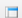
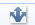
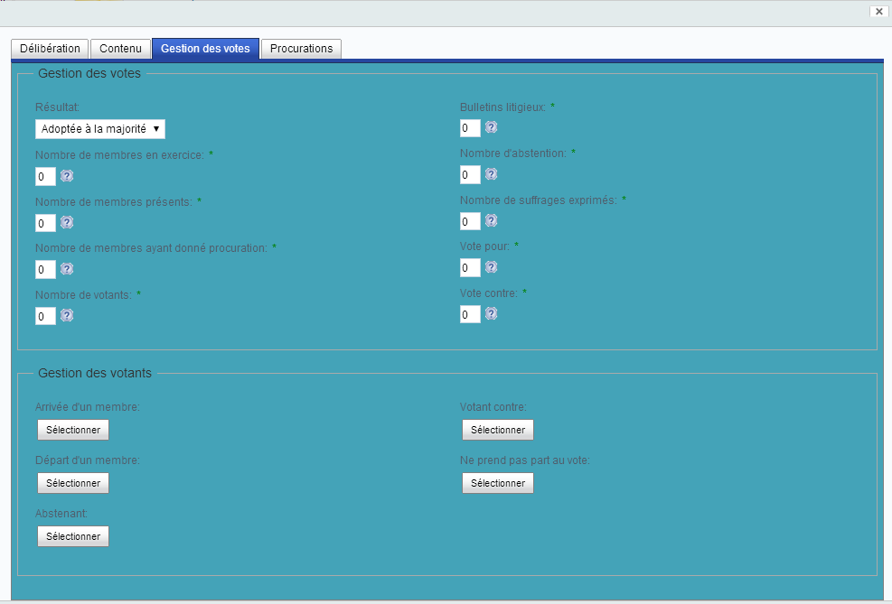

Présentation¶
Présentation Générale¶
Blue Délibération permet de gérer et optimiser la circulation et la validation de vos séances de conseil et des délibérations qui y sont traitées.
 Génération documentaire
Génération documentaire
Grâce à Blue Délibération, une grande majorité des documents utiles aux séances et des documents officiels à diffuser sont générés par des actions utilisateur et automatiquement dans les processus documentaires de validation et diffusion. Ces gains de temps et d’effort s'accompagnent d'une harmonisation des supports et d'une réduction des erreurs de saisie.
Les séances et les délibérations sont définies par vos soins via la création d'éléments sous le portail Alfresco Share de Blue Déliébration. Vous pilotez le cycle de vie sur ces éléments à la fois à travers la gestion documentaires de ces éléments et à travers les processus documentaires qui s'appliquent à ces éléments. Les grandes parties de ce cycle de vie sont données ci-dessous:
Création d'une séance¶
Une séance est un élément qui permet de modéliser la séance physique qui va se tenir dans quelques temps par, par exemple, un conseil communautaire, un bureau communautaire, une assemblée ou une simple activité.
Elle est définie par un certain nombre d'attributs comme une date de séance, une heure de séance, une date de convocation, un président, des secrétaires, ...
Le formulaire ci-dessus fait apparaître des onglets 'Membres', 'Procurations' et 'Gestion de présences': ces onglets permettent de compléter la séances avec diverses informations (comme charger les procurations reçues) et peuvent être utilisés au fur et à mesure de la vie de la séance.
Une fois la séance créée, sa structure est créée et des délibérations peuvent lui être associées:
Création de délibérations¶
Une fois une séance créée, des projets de délibération peuvent lui être associées. Les délibérations correspondent directement à des délibérations d'une séance communautaire ou d'un bureau communautaire mais - moins officiel - il peut également s'agir d'actions d'une simple réunion.
La création de projets de délibération se fait également à travers un formulaire:
A la création d'un projet de délibération via ce formulaire, le document bureautique de la délibération est créé au format MS Word ou Open Office ou Libre Office (en fonction du modèle d'injection de méta-données choisi):
La structure de la délibération est également créée pour associer les annexes, les procurations relatives à la seule délibération:
Les différents services peuvent ainsi créer les délibérations qui vont constituer la prochaine séance.
Documents de séance et de délibérations¶
A la création de la séance, le document bureautique de délibération est automatiquement créé. Nous verrons dans l'étape suivante que le processus documentaire de validation de délibération permet également de générer automatiquement des documents de séance.
Mais à tout moment, les utilisateurs autorisés ont également accès à des commandes d'édition (création, mise à jour, suppression) de document et de génération de documents de séance.
Ci-dessous, les commandes de génération des documents bureautiques de séance:

Ces commandes prennent en compte les attributs de la séance et des délibérations de la séance et les injectent dans des modèles MS Office, Open Office ou Libre Office pour réaliser les documents bureautiques de la séance.
Ceci permet un gain important de temps, assure une harmonisation des formats pour toutes les séances et évitent les erreurs de saisie.
D'autre part l'interface de délibération offre tous les outils pour réaliser une édition collaborative de documents:
-
Création de répertoires (ou 'espace' dans le jargon documentaire),
-
Chargement de documents,
-
Édition en ligne de documents bureautiques MS Office, Open Office et Libre Office,
-
Partage de commentaires sur les documents et les répertoires,
-
Copie, déplacement et suppression de documents et répertoires,
-
Verrouillage et mise à jour contrôlée de documents,
-
Gestion des versions de documents,
-
Création de contenus html, xml, texte ou à partir de modèles bureautiques Office.
-
L'édition des méta-données de séances et délibération permet au fur et à mesure de les mettre à jour et en particulier de rajouter les procurations qui peuvent arriver.
Validation de délibération avant séance¶
Généralement, un projet de délibération doit avoir été validé pour pouvoir passer en séance: la procédure de validation peut être plus ou moins complexe selon le type de séance.
Dans le cas d'un conseil communautaire d'une communauté d'agglomérations, elle est de complexité moyenne et se présente sous une forme proche de :
Note: le digramme ci-dessus présente un processus documentaire modélisé via Blue Parapheur. Ce processus peut donc être mis à jour selon des besoins spécifiques via Blue Parapheur.
Le processus ci-dessus permet de demander successivement ou en parallèle à divers services de valider ou donner un avis sur le projet de délibération.
Ainsi, les étapes de ce processus documentaire se décompose en :
-
Étape 'Validation Chef de Service ou Directeur' (en jaune pour indiquer une étape de démarrage) : L'activation de la commande de validation du projet de délibération passe d'abord par le responsable du service dans lequel se trouve la personne qui soumet la délibération. A ce niveau, le chef de service qui a cette tâche peut soit approuver le projet de délibération qui passe alors à l'étape suivante d'Analyse DGA (ligne verte) soit abandonner purement et simplement (ligne rouge autour de l'étape pour indiquer que l'abandon est possible).
-
Étape 'Analyse DGA' : si le chef de service approuve, le projet de délibération passe par une phase d'analyse de la direction générale de l'administration qui va valider - voire modifier - la délibération pour qu'elle soit conforme aux règles de la communauté.
Si la DGA approuve, le projet de délibération passe alors à l'étape suivante de 'Traitement par Administration générale' (ligne verte). Si la DGA considère que le projet de délibération ne peut être mise en conformité avec les règles de la communauté, elle refuse en expliquant son choix - voire en suggérant des fichiers de correction/adaptation/modification - et dans ce cas le projet de délibération passe alors à l'étape 'Décision de Correction ou Abandon' qui est automatiquement affectée au même intervenant que celui ayant réalisé précédemment l'étape de 'Validation chef de Service ou Directeur'.
-
Étape 'Décision de Correction ou Abandon' : si la DGA ou l'AG ont refusé le projet de délibération, elle revient au chef de service qui doit décider de continuer en apportant les modifications/adaptations demandées (lien vert vers étape 'Correction par Acteur Initial') soit d'abandonner le processus de validation.
-
Étape 'Correction par Acteur Initial' : si le chef de service, après refus de la DGA ou de l'AG, a finalement décidé de continuer la validation de la délibération, le projet de délibération revient à la personne qui avait initialement lancé le processus documentaire de validation pour qu'il apporte les corrections/modifications/adaptations demandées. Il peut alors re-soumettre le projet de délibération pour un nouveau tour de validation.
-
Étape 'Traitement Administration Générale' : si la DGA a approuvé, le projet de délibération passe alors à une phase de traitement par l'administration générale: dans cette phase, l'administration générale va consolider le projet de délibération avec d'autres projets et préparer les documents bureautiques de séance. Il est à noter que certains documents bureautiques de séance sont automatiquement générés lors de l'approbation des étapes comme les ordres du jour synthétiques et le dossier de séance:
-
Étape 'Validation DGS' : une fois que l'AG a terminé son traitement des délibérations et des documents de séance, elle approuve son étape de traitement et la délibération passe alors à la validation par la DGS qui a à sa disposition non seulement les documents de la délibération mais ceux de la séance intégrant la délibération avec éventuellement d'autres. La DGS peut alors décider d'approuver l'intégration de la délibération à la séance ou de refuser pour la reprise sur des modifications mineures ou plus majeures.
-
Étape 'Modification Ordre du Jour': si la DGS a refusé pour procéder à des modifications de l'intégration de la délibération dans la séance, la délibération revient à l'AG qui doit elle-même procéder à ces modifications avant de finaliser l'intégration de la délibération dans la séance (carré bleu pour indiquer fin de processus sur approbation) ou, si les modifications sont plus majeures, de renvoyer au chef de service (lien jour vers étape 'Décision de Correction ou Abandon').
-
Étape 'Intégration dans dossier CC': si la DGS a approuvé, l'AG peut finaliser l'intégration de la délibération dans la séance et terminé le processus.
Pour lancer le processus documentaire, il y a plusieurs méthodes possibles qui passent par exemple par une commande qui lance directement le processus, par une règle qui lance le processus ou bien par un formulaire qui permet à l'utilisateur de paramétrer le lancement. Le formulaire ci-dessous permet de paramétrer le lancement en indiquant :
-
qui doit réaliser la première étape via la sélection 'Intervenants initiaux',
-
qui doit pouvoir consulter et être notifié à la fin du processus documentaire de la validation du projet de délibération via la sélection 'Diffusé à',
-
qui doit pouvoir consulter la délibération (mais pas de notification) à la fin du processus documentaire de la validation du projet de délibération via la sélection 'Consultable Par',
-
qui doit pouvoir consulter et mettre à jour la délibération (mais pas de notification) à la fin du processus documentaire de la validation du projet de délibération via la sélection 'Modifiable Par',
-
la liste des matières et sous-matières à associer à la délibération pour le passage en contrôle de légalité après la séance.
Passage en séance¶
Lors de la création de la séance, une date de séance est définie et 7 jours avant cette date, il devient impossible pour des personnes hors de l'administration générale de pouvoir créer une délibération sous cette séance.
Le formulaire d'édition de délibération un fois qu'elles sont validées permet de renseigner les votes de la délibération en séance:
Après séance¶
Une fois les votes renseignés pour toutes les délibérations, les documents bureautiques de séance peuvent être régénérés pour obtenir les documents officiels finaux en passant par les commandes de génération de séance.
Un processus documentaire aurait pu être défini pour les étapes après séance et en particulier pour la génération des documents et pour le contrôle de légalité mais les utilisateurs actuels ont préféré - étant donné qu'il reste peu d'opérations - un mode manuel en attendant que Blue Délibération soit certifié pour le contrôle de légalité.
Fonctionnalités¶
Principales Fonctionnalités¶
Blue Délibération intègre
-
un outil de gestion documentaire des séances, des délibérations et de leurs constituants,
-
un outil de génération documentaire,
-
un outil de validation des séances et délibérations via des processus documentaire,
-
un outil de publication web.
Gestion Documentaire¶
Une délibération comme une séance sont avant tout un ensemble organisé de documents bureautiques qu'il faut créer, structurer et mettre à jour.
L'outil de gestion documentaire Alfresco de Blue Délibération va permettre d'assurer ces tâches de façon collaborative.
Génération Documentaire¶
Les différents documents bureautiques constituants une délibération ou une séance partagent des données communes comme la date de séance, le lieu, les membres du conseil, .....
Renseigner manuellement ces données communes dans les documents est une tâche rébarbative, consommatrice et source d'erreur.
C'est pourquoi la modélisation de ces données, la centralisation dans une unique source et leur génération est une solution à ces problèmes : Blue Délibération intègre des services d'injection de méta-données s'appuyant sur des modèles bureautiques Ms Office, Open Office et Libre Office.
Validation Documentaire¶
- Une délibération ne peut être publiée ou soumise à séance sans avoir été
- au préalable validée par diverses instances autorisées. Les chaînes de
- validation sont souvent spécifiques à chaque organisation et un outil
- hautement flexible doit permettre de modéliser ces chaînes de validation
- c'est pourquoi Blue Délibération intègre Blue Parapheur qui permet la modélisation et le déploiement de processus documentaire de tous types.
Publication WEB¶
Une fois des publications passées en séance et donc publiques, il est souvent nécessaire de les publier; ceci se fait par affichage mais peut également se faire sur des sites web.
C'est pourquoi Blue Délibération intègre un outil de publication web pour générer à la volée des sites web de publication sur les documents marqués à publier:
Description de l'interface¶
Description de l'interface¶
Introduction¶
Cette page décrit l'interface de Blue Délibération. Elle s'attache à donner un maximum d'informations sur la structure, les composants, les actions constituant toutes les pages web de Blue Délibération.
Elle constitue la première phase de formation en ligne à Blue Délibération et se lit en étant devant l'application.
Les actions que vous avez à faire pour naviguer dans l'application sont
préfixées par l'icône  -.
-.
Au départ, ces actions se limitent à des actions de navigation dans les pages pour ne pas surcharger la page mais vous pouvez au fur et à mesure réaliser les commandes décrites pour vous familiariser.
La page 'Description d'un scénario d'utilisation' décrit un scénario d'utilisation partant de la création d'une séance à sa fermeture en passant par la validation des délibérations: Cette page est donc à suivre après celle-ci pour finaliser votre apprentissage de l'application.
Pour utiliser l'application, il est nécessaire au préalable:
-
D'avoir installé Blue parapheur sur un de vos serveurs (cf chapitre 'Première utilisation' de Blue Parapheur).
-
D'avoir installé Blue Délibération sur l'instance de Blue Parapheur si ce n'est pas déjà fait:
-
Arrêter alfresco.
-
Copier la webapp 'share-deliberation.war' sous <Alfresco répertoire d'installation>/tomcat/webapps.
-
Démarrer alfresco.
-
-
D'avoir initialisé les données de Blue Délibération en réalisant les étapes suivantes:
-
Lancer votre navigateur (nous conseillons Firefox).
-
Se connecter sous alfresco Share en tant qu'administrateur : http://localhost:8080/share-deliberation.
-
Créer le site de nom 'Blue Délibération' et d'identifiant 'bluedeliberation'.
-
Dans un autre onglet de votre navigateur, charger l'url suivante sous administrateur: http://localhost:8080/alfresco/service/bluedeliberation/initialize pour créer les données de travail de Blue Délibération.
-
Si vous avez créé les données de test de Blue Parapheur (site de test 'Test Paraphe'), vous pouvez utiliser ces données de test pour Blue Délibération en chargeant dans le même onglet l'url suivante sous administrateur: http://localhost:8080/alfresco/service/bluedeliberation/initTestData.
-
-
Comme l'application de délibération s'appuie fortement sur la saisie de méta-données (y compris les parties argumentaire et proposition de délibération qui peuvent être conséquentes), nous vous conseillons d'utiliser l'extension Lazarus ((https://addons.mozilla.org/fr/firefox/addon/lazarus-form-recovery/) pour les navigateurs Firefox et Chrome (pas d'équivalent pour IE à notre connaissance pour l'instant) qui permet de sauvegarder ce que vous saisissez en temps réels. En cas d'arrêt brutal du navigateur, vous pouvez alors restaurer ce que vous avez préalablement saisi. L'utilisation se fait simplement par un clic droit sur un champ une fois le formulaire rechargé et par la sélection de la commande 'Rétablir le texte' pour choisir les données qui ont été préalablement sauvegardées avant que le formulaire ne soit fermé inopinément. La commande 'Rétablir un formulaire' permet de récupérer tout le formulaire d'un coup.
Une fois l'application installée, vous pouvez y accéder et suivre les explications ci-dessous; ces explications se font en décrivant les 4 pages principales (le tableau de bord, la page Blue Délibération de liste de document, la page de détail de document et la page de recherche) puis en décrivant le processus documentaire de validation de délibération avant séance.
Page d'accueil dite 'Tableau de Bord'¶
- Se
connecter en tant que 'Tout' à l'application :
http://localhost:8080/share-deliberation
Vous accédez au tableau de bord de l'application qui permet de gérer les séances et projets de délibérations.
Dashlet 'Processus documentaires'¶
Cette dashlet permet de lister:
- les délibérations et séances en cours de validation sur lesquelles vous avez une tâche à réaliser (Filtre 'Mes tâches'),
- les délibérations et séances en cours de validation qui ont été créées il y a moins de 30 jours (Filtre 'Documents Récemment soumis'),
- les délibérations et séances en cours de validation qui ont été modifiées il y a moins de 30 jours (Filtre 'Documents en progression'),
- les documents que vous avez marqué comme favoris en cliquant sur l'étoile jaune à côté du nom des documents (Filtre 'Mes favoris').
Dashlet 'Statistiques des activités'¶
Cette dashlet permet d'afficher des indications d'activités à travers 3 cadrans ('Sessions' pour les sessions utilisateurs en cours, 'Activités' pour les activités générales sur le site et 'Délibérations' pour le nombre totale de délibérations sur le site) et à travers un rapport de suivi paramétrable; Cliquer sur le lien 'Rapport sur le temps' pour y accéder'.
Dashlet 'Aide Blue Deliberation Utilisation'¶
Cette dashlet permet de consulter une aide en ligne extraite de ce wiki.
Page de listes de document dite 'Blue Délibération'¶
- Cliquez sur 'Blue Délibération' en haut de la page pour accéder à la
page de gestion des séances et délibérations.
La gestion des séances et délibérations consiste à :
- créer, mettre à jour, supprimer des séances,
- créer, mettre à jour, supprimer des projets de délibérations,
- créer, télécharger, mettre à jour (édition en ligne, accès concurrents et versionnage), supprimer les fichiers constituants les séances et délibérations comme les annexes ou les procurations,
- collaborer sur les documents via les commentaires,
- valider des projets de délibérations avant séance,
- réaliser les tâches qui vous sont affectées sur les délibérations en cours de validation.
Cette page se décompose en 4 grandes parties:
Partie A d'entête générale¶
La partie A (en jaune sur la figure ci-dessus) est commune à toutes les pages et permet :
-
d'accéder au tableau de bord en cliquant sur 'Tableau de bord',
-
à cette page de gestion des séances et délibérations en cliquant sur 'Blue Deliberation',
-
à la page de résultats de recherche en tapant un texte dans la zone de saisie à droite de la loupe,
-
à la page de formulaire de recherche via le menu 'Recherche avancée' associé à la loupe en cliquant sur la flèche à droite de la loupe et en sélectionnant 'Recherche avancée'.
Partie B de filtres¶
La partie B (en jaune ci-dessus) liste des filtres de sélection: lorsque vous cliquez sur le titre d'un élément d'un filtre, la partie D est mise à jour avec la liste des espaces, des séances, des délibérations ou de leur constituants qui vérifie le filtre.
Les filtres accessibles sont:
Filtre 'Filtre'¶
Le filtre 'Filtre' liste des filtres qui permettent des accès rapides à des documents indépendamment de leur position dans le site et de leurs caractéristiques spécifiques:.
-
Tous les documents: liste tous les fichiers,
-
Verrouillés par moi': liste tous les fichiers que j'ai verrouillé pour mettre à jour et que d'autres personnes ne puissent pas le mettre à jour en même temps que moi tant que je ne les ai pas libérés,
-
Verrouillés par d'autres': liste tous les fichiers que d'autres ont verrouillé pour mettre à jour et que je ne peux pas mettre à jour tant qu'ils ne les ont pas libérés
-
'Récemment modifié': liste tous les fichiers qui ont été modifiés depuis moins de 30 jours,
-
'Récemment ajouté': liste tous les fichiers qui ont été ajoutés depuis moins de 30 jours
-
'Mes favoris': liste tous les fichiers que j'ai marqué comme favoris en cliquant sur l'étoile jaune 'Favori',
-
'Tâches' : liste les délibérations ou les séances sur lesquelles j'ai des tâches de processus documentaire à réaliser.
Filtre 'Fichiers'¶
Le filtre 'Fichiers' présente la structure arborescence des documents du site (équivalent à la structure de 'windows explorer' sur votre ordinateur):
L'accès à cette page vous positionne automatiquement sur le filtre 'Fichiers' de la partie B qui présente le plan de classement arborescent des séances et délibérations. Ce plan de classement est par défaut de la forme:
-
Conseil Communautaire -> <Liste des Séances> -> <Liste des Délibérations> -> <Listes des constituants d'une délibération comme le fichier bureautique de délibération, les annexes, les procurations>
-
Bureau Communautaire -> <Liste des Séances> -> <Liste des Notes> -> <Listes des constituants d'une note comme le fichier bureautique de note, les annexes, les procurations>
Administration Générale -> <Liste des Séances> -> <Liste des Notes> -> <Listes des constituants d'une notes comme le fichier bureautique de note, les annexes>
En cliquant sur un nom d'un espace de cette liste arborescente vous accédez au contenu de cet espace qui est listé dans la partie D.. En cliquant sur le signe plus à gauche d'un espace vous ouvrez en dessous la liste des espaces contenu dans cet espace.
Filtre 'Lieux'¶
Le filtre 'Lieux' liste les lieux (salle et ville) associés aux séances. Cette liste de lieux est mise à jour par les administrateurs du site via une page du site accessible aux seuls administrateurs.
En cliquant sur un des lieux, vous filtrez dans la partie D les séances se déroulant ou s'étant déroulées dans ce lieu.
Filtre 'Services'¶
Le filtre 'Services' liste les services associés aux délibérations. Cette liste de services est mise à jour par les administrateurs du site via une page du site accessible aux seuls administrateurs.
En cliquant sur un des services, vous filtrez dans la partie D les délibérations soumises par le service sélectionné.
Filtre 'Compétences'¶
Le filtre 'Compétences' liste les compétences associés aux délibérations. Cette liste de compétences est mise à jour par les administrateurs du site via une page du site accessible aux seuls administrateurs.
En cliquant sur une des compétences, vous filtrez dans la partie D les délibérations relevant de cette compétence.
Filtre 'Recherches sauvegardées'¶
Le filtre 'Recherches sauvegardées' liste les recherches avancées que vous avez sauvegardées à partir de la page de résultats de recherche.
En cliquant sur une des recherche sauvegardées, vous filtrez dans la partie D les délibérations qui satisfont aux critères de la recherche.
Partie C de commandes groupées¶
La partie C (en jaune ci-dessus) propose des commandes qui s'appliquent à l'ensemble des documents listés en partie D :
Commande 'Créer un contenu'¶
La commande 'Créer un contenu' permet de créer des fichiers vierges aux formats plein texte, HTML ou XML dans l'espace ou dossier courant (celui dont le contenu est listé dans la partie basse de D).
Elle ouvre un formulaire permettant de renseigner les attributs et le contenu du fichier à créer:
Après avoir renseigné les différents attributs (Nom du fichier, titre, et description) et le contenu du fichier, l'activation du bouton 'Créer' affiche la page détail du nouveau fichier.
Cette commande permet également de créer des fichiers bureautiques à partir de modèles : par défaut, une liste de modèles MS Office et Open Office sont fournis:
Cette liste de modèles peut être étendue et les modèles mis à jour par les administrateurs du site via une page du site accessible aux seuls administrateurs.
A la sélection d'un modèle de cette liste, un fichier du même nom que le modèle et de même contenu est créé dans l'espace courant:
Commande 'Nouveau Dossier'¶
La commande 'Nouveau dossier' permet de créer un nouvel espace dans l'espace curant à travers un formulaire de création de dossier:
Après avoir renseigné les différents attributs (Nom du dossier, titre, et description), l'activation du bouton 'Enregistrer' affiche la page Blue Délibération avec le nouveau dossier:
Commande 'Importer dans l'entrepôt'¶
La commande 'Importer dans l'entrepôt' permet de charger dans l'espace courant un fichier que vous détenez sur le disque de votre ordinateur.
Le chargement se passe en 3 étapes:
-
À l'activation de la commande, la fenêtre suivante s'affiche:
-
L'activation du bouton 'Sélectionner le(s) fichier(s) à ajouter' ouvre la fenêtre de sélection de windows explorer permettant de naviguer sur les disques de l'ordinateur pour sélectionner les fichiers à charger:
Dans cette fenêtre, vous pouvez utiliser les touches de votre clavier: - 'CTRL' pour sélectionner plusieurs fichiers non contigus, - 'SHIFT' pour sélectionner plusieurs fichiers contigus. L'activation de la sélection se fait en cliquant sur le bouton 'Ouvrir'.
-
À l'activation du bouton 'Ouvrir', la fenêtre de sélection se ferme et la liste de la fenêtre dessous est complétée avec les fichiers sélectionnés:
À ce niveau-là, les fichiers ne sont pas encore chargées dans l'application. - Le bouton 'Retirer' permet de désélectionner un des fichiers. - Le bouton 'Ajout de fichier(s)' permet de charger les fichiers dans l'application.
-
À l'activation du bouton 'Ajout de fichier(s)', les fichiers sont progressivement chargés avec un indicateur de progression à gauche de chaque fichier.
-
Dès que tous les fichiers sont chargés (indicateur de progression à 100%), le bouton 'OK' permet de fermer la fenêtre et de rafraîchir la page Blue Délibération avec les nouveau fichiers:
Cette commande peut également se faire par un simple glisser/déposer depuis votre explorateur windows dans la partie basse de D:
Commande 'Visualiser les détails'¶
La commande 'Visualiser les détails' permet de charger la page qui donne les détails de l'espace courant.
Cette page est expliquée plus en détail dans la partie 'Page de détail' ci-dessous.
Liste 'Eléments sélectionnés'¶
La liste 'Eléments sélectionnés' est activée quand vous sélectionner dans la partie D au moins un document en validant la case à cocher placée avant le document :
Cette liste propose des commandes qui vont s'appliquer sur les documents sélectionnés (comme l'espace 'Annexes' dans la figure ci-dessus). Un document est sélectionné quand sa case à cocher est validée: ceci se fait directement par l'utilisateur en cochant la case ou en utilisant le menu 'Sélectionner' décrit dans la partie D ci -dessous.
Les commandes sont :
-
'Valider les délibérations' : pour lancer le processus de validation avant séance de plusieurs délibérations en une seule commande.
-
'Copier vers...' : pour copier les documents sélectionnés dans un autre espace. A l'activation de la commande, un assistant de sélection permet de choisir la destination:
A l'activation du bouton 'Copier', la copie est effectuée et la page Blue Délibération est rafraîchie. Si le document est copiée dans le même espace, le nom du document est préfixée par 'Copie de'.
-
'Déplacer vers...': pour déplacer les documents sélectionnés dans un autre espace. A l'activation de la commande, un assistant de sélection similaire à celui ci-dessus permet de choisir la destination.
-
'Supprimer' : pour supprimer les documents sélectionnés après confirmation.
-
'Démarrer un workflow' : pour lancer un workflow simple de validation sur les documents sélectionnés; ces workflows permettent de soumettre une tâche de révision puis une tâche d'approbation à une ou plusieurs personnes qu'il faut choisir au préalable dans une liste. Cette commande est conservée dans Blue Délibération même si son utilisation est plus que rare : les processus documentaire de validation comme celui proposé par cette commande se font désormais via les processus de Blue Parapheur qui sont beaucoup plus riches en termes de services (notification, historisation, injection, ...), plus ergonomiques et simples à utiliser et beaucoup plus faciles à modéliser et déployer. Ces workflows simples ont été conservés pour seulement réaliser une validation ouverte et informelle d'un fichier.
Commande 'Nouvelle Séance'¶
La commande 'Nouvelle Séance' permet de créer une nouvelle séance à travers l'affichage d'un seul formulaire de saisie:
Ce formulaire est composé de 5 zones:
-
La zone 'Identité' permet de renseigner les attributs obligatoires d'identification d'une séance:
-
'Se déroule à' désigne le lieu (ville + salle) où se déroule la séance; les valeurs sont extraites de la liste de données 'Lieux' sur lequel porte le filtre 'Lieux'.
-
'Objet' est un texte libre qui décrit de façon succincte l'objet de la séance.
-
-
La zone 'Date' permet de renseigner les dates de la séance:
-
'Date' indique la date à laquelle va se tenir la séance; attention cette date est importante car une règle va se déclencher 7 jours avant cette date pour empêcher les utilisateurs autre que les membres de l'administration générale à créer de nouvelles délibérations.
-
'Heure de début' indique l'heure de début de la séance; les valeurs sont extraites de la liste de données 'Heures' que les administrateurs peuvent étendre et modifier à partir d'une page spécifique du portail. Si l'utilisateur ne renseigne pas ce champs, la valeur par défaut '16 h' est sélectionnée.
-
'Date de Convocation' indique la date à partir de laquelle seront envoyés les convocations aux membres (ces convocations sont générés par Blue Délibération).
-
'Date de Publication' indique la date à laquelle seront publiés le compte-rendu de séance et les délibérations passés en séance.
-
-
La zone 'Rôles' permet de renseigner les rôles à assumer pendant la séance:
-
'Président de la séance' donne la liste des personnes assumant le rôle de président d'une séance (dans le cas du conseil communautaire, il s'agit du président ou d'un de ses vice-présidents); cette sélection se fait à travers un sélecteur de personnes :
Ce Sélecteur est composé de 4 parties:
-
La partie 1 permet de filtrer dans la partie 2 la liste des personnes sur leur nom et/ou prénom et la liste des groupes sur leur nom. Le caractère '?' remplace n'importe quel caractère mais un seul uniquement (par exemple 'Admin??tration' va retourner 'Administration' mais 'Admin??stration' ne va pas retourner 'Administration'). Le caractère '*' remplace n'importe quelle séquence de caractères. Par exemple la saisie de '*dmin??tration Gén*' va retourner 'Administration Générale'. La saisie de * va retourner tous les groupes et personnes. La saisie de 'A*' va retourner toutes les personnes dont le nom ou prénom commence par A et tous les groupes dont le nom commence par A. *Note: la casse n'est pas prise ne compte dans la recherche est donc minuscules et majuscules conduisent aux mêmes résultats. *
-
La partie 2 liste les personnes ou groupes pouvant être sélectionnés. Pour sélectionner une personne ou un groupe, cliquer sur le se situant à droite de la personne ou du groupe. Note : cette liste peut être limitée aux membres d'un groupe dans certains cas (en particulier pour les processus documentaires).
-
La partie 3 liste les personnes ou groupes qui ont été sélectionnés. Pour retirer une personne ou un groupe sélectionné, cliquer sur le se situant à droite de la personne ou du groupe sélectionné.
-
La partie 4 permet de valider la sélection grâce au bouton 'OK' ou d'invalider via le bouton 'Annuler'. L'activation des ces boutons permet de revenir sur le formulaire.
Une fois la sélection validée, les personnes ou groupes sélectionnés sont affichés dans le formulaire au dessus du bouton 'Sélectionner'.
-
-
'Secrétaire(s) de la séance' permet de sélectionner les personnes qui vont assumer le rôle de secrétaire pendant la séance (dans le cas du conseil communautaire, le rôle est assumé parmi les conseillers); cette sélection se fait à travers un sélecteur de personnes.
-
-
La zone 'Procurations' permet de déclarer les procurations de certains membres ne pouvant se rendre à la séance données une personnes s'y rendant. Il est possible qu'à la création de la séance, il n'y ait pas encore de procurations mais ce n'es pas un problème car la séance peut être mise à jour par la suite via la commander 'Éditer les propriétés'. Le bouton 'Ajouter' permet d'ajouter une procuration à travers un formulaire s'appuyant sur deux sélecteurs de personnes pour désigner respectivement la personne donnant procuration et la personne recevant la procuration.
Le bouton 'Enregistrer' valide la sélection des personnes et la procuration est ajoutée au dessous du bouton 'Ajouter':
Le lien 'Retirer' permet de supprimer la procuration.
Le lien 'Mettre à jour' permet de ré-afficher le formulaire de sélection des 2 personnes pour éventuellement changer l'un ou l'autre.
Note: la désignation de la procuration est suivi d'un code pour la rendre unique et la référencer.
Généralement, les documents bureautiques électroniques ou papier de la procuration doivent être conservés au plus tard juste avant le début de la séance: c'est pourquoi il est prévu, dans la séance, l'espace 'Organisation/Procurations' pour charger les fichiers de procuration électroniques ou scannés (ce chargement se fait pas simple glisser/déposer ou par la commande 'Importer dans l'entrepôt'). Sans le fichier de procuration au début de la séance, les procurations ainsi déclarées sur la séance sont retirées.
-
La zone 'Gestion de présences' permet de renseigner les personnes effectivement présentes à la séance:
Elle s'appuie sur 4 sélecteurs de personnes pour sélectionner les Vice-présidents présents, les vice-présidents absents, les conseillers présents, les conseillers absents. La sélection affiche les personnes au-dessus des boutons : pour modifier la liste, cliquer de nouveau sur le bouton 'Sélectionner'.
Cette zone peut être renseignée à la création de la séance si l'on a connaissance de personnes absentes par exemple jusqu'à l'issue de la séance où l'on s'aperçoit qu'une personne n'est finalement pas là bien que n'ayant pas donné procuration.
Une fois les informations renseignées (au moins les attributs obligatoires c'est-à-dire ceux dont le libellé est suffixé par une étoile comme 'Objet' ou 'Se déroule à'), le bouton 'Enregistrer' permet de créer effectivement la Séance.
Le fait d'avoir renseigner ces attributs de séance va permettre de générer progressivement les documents de séance (émargement, convocation, ...) avec une information centralisée et ainsi gagner du temps sur la construction des documents et éviter les erreurs de saisie.
A l'activation du bouton 'Enregistrer', la séance est créée et la page Blue Délibération est rafraîchie avec la nouvelle séance. La nouvelle séance créée est un dossier qui porte les attributs qui ont été renseignés mais qui contient également une structure particulière qui peut être affiché en cliquant sur le nom de la séance:
L'espace '_Organisation' contient les documents de travail de la séance gérée par l'équipe de l'Administration Générale. Elle est composée de 3 sous-espaces:
-
Le sous-espace 'Avant-séance' contient les documents de travail d'avant séance et en particulier les documents générés comme:
-
Dossier_<Nom séance>.docx : le dossier de la séance, Ce document est généré par l'action 'Générer le dossier' de la séance,
-
ODJ_Synthétique_<Nom séance>.docx : l'ordre du jour synthétique de la séance, Ce document est généré par l'action 'Générer l'ordre du jour synthétique' de la séance,
-
Liste_suivi_<Nom séance>.docx : un document de suivi des délibérations, Ces 3 documents sont également automatiquement générés dans les processus de validation de délibération à chaque fois qu'une étape est passée.
-
Convocation_<Conseillères|Conseillers>_<Nom séance>.docx : la convocation pour les conseillères et la convocation pour les conseillers,
-
Convocation_<Vice_Présidente|Vice_Président>_<Nom séance>.docx : la convocation pour les vice-présidentes et et la convocation pour les vice-présidents,
-
Convocation_<Présidente|Président>_<Nom séance>.docx : la convocation pour la présidente et et la convocation pour le président, Ces 3 documents sont générés par l'action 'Générer les convocations' de la séance.
-
Liste_Emargement_<Nom séance>.docx : la liste d'émargement à faire signer en séance, Ce document est généré par l'action 'Générer la liste d'émargement' de la séance.
-
Liste_Procuration_<Nom séance>.docx : la liste des procurations de la séance, Ce document est généré par l'action 'Générer la liste des procuration' de la séance.
-
-
Le sous-espace 'Après-séance' contient les documents de travail d'après séance et en particulier les documents générés comme:
-
Procès_Verbal_<Nom séance>.docx : le récapitulatif des délibérations et votes de la séance, Ce document est généré par l'action 'Générer le procès verbal de la séance' de la séance.
-
Chapeau_<Nom séance>.docx : le chapeau général de la séance qui peut être inséré dans les autres documents, Ce document est généré par l'action 'Générer le chapeau' de la séance.
-
<Nom séance>.docx : le dossier de séance pour la préfecture avec les délibérations et les votes Ce document est généré par l'action 'Générer les délibérations pour le préfecture' de la séance.
-
-
Le sous-espace 'Procurations' contient les documents de procuration signés et scannés par les personnes concernées.
Cette commande n'est disponible que pour l'espace 'Conseil Communautaire'.
Commande 'Nouvelle Délibération'¶
La commande 'Nouvelle Délibération' permet de créer une nouvelle délibération à travers l'affichage d'un seul formulaire de saisie.
Ce formulaire de création est composé de 2 onglets:
-
L'onglet 'Délibération' permet de renseigner les attributs obligatoires d'une délibération ainsi que charger les fichiers annexes:
-
À la création d'une délibération, seules les attributs suivants sont disponibles:
-
'Titre' désigne le titre de la délibération.
-
'Compétence' indique de quelle compétence relève la délibération; les valeurs sont extraites de la liste de données 'Compétences' sur lequel porte le filtre 'Compétences'.
-
'Annexe' s'appuie sur le sélecteur de fichier pour charger des fichiers dans l'espace 'Annexes' de la délibération: les annexes sont généralement des documents bureautiques et des plans qui permettent de renforcer l'argumentaire et les objectifs de la délibération. Le sélecteur de fichier permet de sélectionner des fichiers sur les disques de l'ordinateur et se comporte comme celui de la commande 'Importer dans l'entrepôt'.
-
-
À l'édition d'une délibération, les attributs supplémentaires suivants sont disponibles:
-
'Type d'ordre du jour' indique l'importance de la délibération; les valeurs sont extraites de la liste de données 'Catégories d'ordre du jour'.
-
'Service Instructeur' indique le service d'où émane le projet de délibération.
-
'Élu rapporteur' s'appuie sur le sélecteur de personnes pour sélectionner l'élu qui est rapporteur de la délibération.
-
-
Une fois qu'une délibération a été validée, l'onglet supplémentaire 'Vote' permet de renseigner les votes de la délibération:
La zone 'Gestion des votes' permet de renseigner les résultats des votes de la délibération:
-
Le champ 'Résultat' permet d'indiquer le résultat du vote parmi les valeurs suivantes:
-
Adoptée,
-
Adoptée à la majorité,
-
Refusée,
-
Rejetée,
-
Reportée.
-
-
Le champ 'Nombre de membres en exercice' indique le nombre des membres de la séance,
-
Le champ 'Nombre de membres présents' indique le nombre de membres présents à la séance pour cette délibération,
-
Le champ ' Nombre de membres ayant donné procuration' indique le nombre de membres ayant donné procuration pour cette délibération,
-
Le champ 'Nombre de votants' indique le nombre de membres ayant participé au vote pour cette délibération,
-
Le champ 'Bulletin litigieux' indique le nombre de bulletins qui n'ont pu être pris en compte lors du scrutin du fait de leur caractère non clair, litigieux ou illisible,
-
Le champ 'Nombre d'abstention' indique le nombre de membres s'étant abstenu de voter pour cette délibération,
-
Le champ 'Nombre de suffrages exprimés' indique le nombre de votes exprimés pour cette délibération,
-
Le champ 'Vote pour' indique le nombre de votes en faveur de cette délibération,
-
Le champ 'Vote contre' indique le nombre de votes en défaveur de cette délibération,
La zone 'Gestion des votants' permet d'indiquer membre par membre le vote réalisé:
-
Le sélecteur de personnes 'Arrivée d'un membre' permet d'indiquer les membres qui sont arrivés pour cette délibération; si une procuration avait été donné lors d'une délibération précédente, elle devient caduque à partir de cette délibération,
-
Le sélecteur de personnes 'Départ d'un membre' permet d'indiquer les membres qui sont partis lors de cette délibération; les membres partant peuvent donner procuration et si c'est le cas, la procuration doit être créée via l'onglet procuration,
-
Le sélecteur de personnes 'Abstenant' permet d'indiquer les membres qui se sont abstenus de voter pour cette délibération,
-
Le sélecteur de personnes 'Votant contre' permet d'indiquer les membres qui ont voté en défaveur de cette délibération,
-
Le sélecteur de personnes 'Ne prend pas part au vote' permet d'indiquer les membres qui ne peuvent pas prendre part au vote pour cette délibération.
-
-
Une fois qu'une délibération a été validée, l'onglet supplémentaire 'Procuration' permet de déclarer une procuration qui a été donnée à partir de cette délibération en séance alors que le donneur devait quitter la séance:
Le bouton 'Ajouter' permet d'afficher le formulaire de création de procuration composé de 2 sélecteurs de personne, respectivement celle qui donne procuration et celle à qui est donnée la procuration.
-
-
L'onglet 'Projet' permet de renseigner le contenu de la délibération en termes d'argumentaire et proposition:
3 attributs sont demandés :
-
Le champ de saisie 'Argumentaire' permet de renseigner l'argumentaire de la délibération.
-
Le champ de saisie 'Proposition' permet de renseigner l'objectif de la délibération et ce qui est proposé au vote.
-
Le champ de saisie 'Observations' permet de donner des éléments complémentaires pour que les membres de la séance comprennent bien les enjeux mais ces observations ne seront pas reprises dans la délibération publiée.
Ces champs peuvent être renseignés par copier/coller.
Note: ces champs vont alimenter les documents bureautiques générés comme le dossier de conseil communautaire. Le formatage de ces champs doit donc être relativement simple pour que la présentation des documents générés soit préservée.
-
A l'activation du bouton 'Enregistrer', la délibération est créée sous la Séance et la page Blue Délibération est rafraîchie avec la nouvelle délibération. La nouvelle délibération créée est un dossier qui porte les attributs qui ont été renseignés mais qui contient également une structure particulière qui peut être affiché en cliquant sur le nom de la délibération:
Cette structure comporte:
-
Le dossier 'Annexes' qui contient les fichiers annexes qui ont été chargés depuis le formulaire 'Nouvelle Délibération' ou qui peuvent être chargés directement depuis l'interface en utilisant soit la commande 'Importer dans l'entrepôt', soit un simple glisser/déposer.
-
Le dossier 'Procurations' dans lequel peuvent être chargés les fichiers bureautiques électroniques ou scannés de procurations via soit la commande 'Importer dans l'entrepôt' ou un simple glisser/déposer : il ne s'agit là que des procurations qui s'appliquent à cette seule délibération et à ces suivantes; si l'utilisateur qui a donné procuration revient avant la fin de la séance, la procuration ne s'appliquera qu'à partir de cette délibération jusqu'à celle avant la délibération à laquelle l'utilisateur a de nouveau participé au vote.
-
Le fichier de délibération du nom de la délibération est généré au format MS Office ou Open Office ou Libre Office (selon le modèle qui a été paramétré):
Les textes surlignés corresponde à des attributs de la séance ou de la délibération qui ont été automatiquement injectés dans le document.
Cette commande 'Nouvelle Délibération' n'est disponible que sous une séance.
Commande 'Afficher le processus'¶
Cette commande permet d'afficher le processus documentaire qui est en cours sur la délibération ou séance concernée. Par exemple, l'affichage d'un processus de donne la fenêtre :
Cette commande n'est disponible que pour les délibérations ou séances sur lesquels des processus documentaires ont été lancés et pour lesquels vous avez été autorisés soit parce que vous êtes intervenus sur une étape, soit parce qu'on vous a explicitement donner des droits en consultation lors d'une étape.
Note: Reporter vous à Blue Parapheur pour plus d'explications sur les processus documentaires, leur modélisation et leur représentation.
Pour fermer la fenêtre, cliquer sur le croix en haut à droite.
Commande 'Réaliser ma tâche documentaire'¶
Cette commande permet de réaliser une tâche qui vous incombe sur un processus documentaire à travers l'affichage d'un seul formulaire de tâche.
Cette commande n'est disponible que pour les délibérations ou séances sur lesquels des processus documentaires ont été lancés et pour lesquels une des étapes en cours vous a été assignées.
Note: Reporter vous à Blue Parapheur pour plus d'explications sur les processus documentaires, leur modélisation et leur représentation.
Sur le formulaire ci-dessus, il est rappelé que :
-
L'icône '' permet d'afficher le processus documentaire en indiquant l'étape en cours par une croix rouge,
-
L'icône '' permet d'afficher l'historique du processus documentaire,
-
L'icône '' permet d'afficher cette aide en ligne,
-
Le champs 'Commentaire' permet de renseigner un commentaire pour les personnes qui vont intervenir sur les étapes suivantes et ce pour tous les boutons (Approuver, Refuser, Demande d'avis, Déléguer, ...),
-
Le champs de sélection de 'Fichiers suggérés' permet de soumettre des suggestions/corrections directement dans des fichiers bureautiques,
-
Le bouton 'Approuver' permet d'approuver l'étape,
-
Le bouton 'Refuser' permet de refuser la validation de l'étape et de renvoyer sur une étape de correction par exemple,
-
L'onglet 'Demande d'avis' permet d'afficher la sélection d'un ou plusieurs conseillers et un bouton de demande d'avis, le champs commentaire peut être utilisé pour expliquer ce que l'utilisateur attend comme avis.
-
L'onglet 'Délégation' permet de forcer l'étape en délégation via le bouton 'Déléguer' et éventuellement un sélecteur de personnes pour choisir des délégués.
L'icône flux RSS¶
Cette icône permet de s'abonner à un flux RSS sur le document courant pour obtenir le flux des modifications (création, suppression, mise à jour de documents).
L'icône de navigation¶
Cette icône  permet de cacher la partie juste en dessous appelée 'fil d'Ariane' et qui permet de naviguer sur les espaces parents et enfants.
L'icône parent¶
Cette icône permet de remonter à l'espace supérieure dans la partie D.
Le fil d'Ariane¶
Le fil d’Ariane tel que
indique le chemin depuis le plus haut niveau jusqu'à l'espace courant: un clic sur un des niveaux intermédiaires permet d'afficher dans la partie D le contenu de ce niveau intermédiaire.
Un clic sur le dernier niveau permet d'afficher sa page de détail comme pour la commande 'Visualiser les détails'.
Partie D de liste de documents¶
La partie D (en jaune ci-dessus) liste les documents contenus dans l'espace courant dans sa partie basse et des commandes de présentation dans sa partie haute.
Commandes de présentation partie haute¶
Les commandes de présentation sont:
-
'Sélectionner" permet de sélectionner un ensemble de documents pour les commandes sous la liste 'Éléments sélectionnés' : les sélections possibles portent sur 'Documents' pour les fichiers, 'Dossiers' pour les sous-espaces, 'Toutes' pour tous les documents et sous-espaces sous l'espace courant, 'Inverser la sélection' pour désélectionner ce qui est actuellement sélectionné et sélectionner ce qui ne l'est pas, 'Aucun' pour tout désélectionner.
-
Le filtre de tri qui permet de choisir l'attribut sur lequel trié la liste des documents:
La flèche verte permet d'inverser le tri.
-
La commande permet de cacher les dossiers (ou espaces) et de n'afficher que les fichiers (documents ayant un contenu comme les fichiers bureautiques MS Office).
-
Les commandes permettent d'avoir une vue simplifiée (avec moins d'attributs) des documents listés pour l'icône de gauche et une vue détaillée (avec plus d'attributs) pour l'icône de droite.
Liste de documents¶
La partie basse contient la liste des documents; une ligne de cette liste se décompose en 5 zones :
-
La zone 1 contient la case à cocher qui permet de sélectionner le document pour les commandes du menu 'Éléments sélectionnés',
-
La zone 2 affiche des indicateurs sur le document:
-
L'icône indique qu'un processus documentaire est en cours sur le document,
-
L'icône indique que le document est sorti avec succès d'un processus documentaire,
-
L'icône indique que le document est sorti avec succès d'un processus documentaire et que des demandes de modifications peuvent lui être appliquées,
-
L'icône indique que le document vient de passer avec succès un processus documentaire et que l'utilisateur - qui est dans la liste de diffusion - doit consulter au moins un de ses fichiers pour accuser réception qu'il en a pris connaissance,
-
L'icône l'utilisateur a accusé réception du document récemment validé en consultant au moins un de ses fichiers.
D'autres icônes de moindre importance peuvent également apparaître comme:
-
L'icône indique que le fichier a été verrouillé par un utilisateur et qu'il ne peut plus être mis à jour tant qu'il est verrouillé par cet utilisateur,
-
L'icône '' indique la copie de travail du fichier verrouillé que vous êtes seul à pouvoir éditer,
-
L'icône '' indique qu'une règle de gestion est posée sur l'espace,
-
L'icône '' indique qu'un workflow simple est en cours sur le fichier.
-
-
-
La zone 3 affiche l'icône associée au document en fonction de son type ou de son typemime:
-
Si le document a un contenu bureautique associé, l'icône est remplacé par une miniature présentant la première page du document.
-
Si le document est une délibération, l'icône '' est affichée.
-
Si le document est une délibération, l'icône '' est affichée.
-
-
La zone 4 affiche les informations d'identification du document avec:
-
en première ligne son nom et son titre entre parenthèse,
-
sur les lignes suivantes, un sous-ensemble de ces attributs suivant son type de document.
Un clic sur le nom du document provoque :
-
dans le cas où le document est un dossier, l'affichage de son contenu,
-
dans le cas où le document n'est pas un dossier (ne contient pas d'autres éléments), l'affichage de sa page de détail (cf Page de détail).
-
-
La zone 5 affiche les commandes qui peuvent être réalisées sur le document. Ces commandes apparaissent lorsque vous positionnez le pointeur de la souris sur la ligne du document. La liste est limitée aux trois premières commandes et à la ligne 'Plus' : un clic sur 'Plus' permet d'accéder à la liste des autres commandes:
-
La commande 'Réaliser ma tâche documentaire' permet d'ouvrir le formulaire de tâche d'un processus documentaire, tâche assignée à l'utilisateur sur ce document,
-
La commande 'Visualiser les détails' permet d'accéder à la page de détail du document,
-
La commande 'Editer les propriétés' permet d'ouvrir le formulaire de mise à jour du document. Par exemple, s'il s'agit d'une délibération, le formulaire de délibération est affiché et permet par exemple de renseigner le numéro dès que l'ordre des délibérations pour la séance a pu être déterminée.
-
La commande 'Copier vers...' permet de copier le document dans un autre espace,
-
La commande 'Déplacer vers' permet de déplacer le document dans un autre espace,
-
Les commandes 'Supprimer le dossier' et 'Supprimer le document' permettent de supprimer le document,
-
La commande 'Gérer les permissions' permet de gérer les permissions associées aux document. Cette gestion se fait en changeant les rôles par défaut de la façon suivante:
-
Tous les utilisateurs ayant un rôle de 'Lecteur' peuvent sur le document courant avoir un autre rôle parmi 'Contributeur', 'Collaborateur' ou plus d'accès au document ('pas de privilège').
-
Tous les utilisateurs ayant un rôle de 'Contributeur' peuvent sur le document courant avoir un autre rôle parmi 'Lecteur', 'Collaborateur' ou plus d'accès au document ('pas de privilège').
-
Tous les utilisateurs ayant un rôle de 'Collaborateur' peuvent sur le document courant avoir un autre rôle parmi 'Contributeur', 'Lecteur' ou plus d'accès au document ('pas de privilège').
Le rôle de 'Lecteur' ne permet que l'accès en lecture au document et interdit toute modification.
Le rôle de 'Contributeur' permet l'accès en lecture au document, en modification s'il s'agit d'un document qu'il a lui-même créé et interdit toute modification dont il n'est pas le propriétaire.
Le rôle 'Collaborateur' permet l'accès en lecture et modification au document.
-
-
La commande 'Télécharger' permet, dans le cas d'un fichier, de récupérer le fichier sur son disque: la fenêtre de téléchargement du navigateur s'il reconnait le type mime du fichier, peut proposer d'ouvrir le document avec l'éditeur approprié (mais attention, il ne s'agit pas d'une édition en ligne: il s'agit d'une copie sur le disque local qui est ouverte dans l'éditeur).
-
La commande 'Editer en ligne' permet - à la différence de la commande précédente - d'éditer le contenu du document dans l'éditeur approprié directement en ligne et de pouvoir apporter des modifications directement sur le contenu du document dans l'application Blue Délibération.
-
La commande 'Mettre à jour' permet de mettre à jour le contenu d'un fichier avec un contenu provenant d'un fichier sur le disque local de l'utilisateur; dans le même temps une nouvelle version du document est créée.
-
Détail sur la gestion des permissions¶
Documents Lecteur Contributeur Collaborateur Coordinateur
Fonction sur ses propres documents
Créer un dossier Oui Oui Oui
Ajouter un document Oui Oui Oui
Éditer en ou hors ligne Oui Oui
Éditer les propriétés Oui Oui
Visualiser les détails Oui Oui Oui Oui
Supprimer Oui
Gérer les permissions Oui
Valider une délibération Oui Oui Oui
Réaliser une tâche documentaire Oui Oui Oui Oui
Voir les dossiers ou fichiers Oui Oui Oui Oui
Télécharger (fichier) Oui Oui Oui Oui
Ajouter un commentaire Oui Oui Oui
Editer un commentaire Oui Oui
Supprimer un commentaire Oui
Remplacer par une nouvelle version (fichier) Oui Oui Oui
Assigner un workflow Oui Oui Oui
Valider/Refuser un workflow Oui Oui
Fonction sur les documents des autres
Éditer en ou hors ligne Oui Oui
Éditer les propriétés Oui Oui
Visualiser les détails Oui Oui Oui Oui
Voir les dossiers ou fichiers Oui Oui Oui Oui
Télécharger (fichiers) Oui Oui Oui Oui
Gérer les permissions Oui
Valider une délibération Oui Oui Oui
Réaliser une tâche documentaire Oui Oui Oui Oui
Page de détail de document¶
Lorsque l'utilisateur clique sur le nom d'un fichier ou sur la commande 'Visualiser les détails', il accède à la page de détail du document.
Cette page est légèrement différente suivant qu'il s'agit d'un fichier ou d'un dossier :
Page de détail d'un dossier¶
- Positionner
le pointeur de la souris sur le nom du dossier 'Conseil Communautaire'
dans la partie de droite et sélectionnez dans le menu qui s'affiche à
droite la commande 'Visualisez les détails'.
Dans le cas d'un dossier la page se décompose en 3 parties principales:
Partie 1 haute de titre et navigation¶
La partie 1 est composée de :
-
Dans sa partie haute, du fil d'Ariane qui permet de cliquer sur un espace parent pour afficher son contenu dans la page liste de documents.
-
Dans sa partie basse, du nom du document, de la date de dernière modification et des commandes suivantes:
-
un clic sur ' ' permet d'indiquer que le document est un favori: le filtre 'Favori' de la page liste de documents permettra de l'afficher dans sa liste pour un accès plus rapide.
-
un clic sur '' permet d'incrémenter le compteur des personnes qui apprécient ce document,
-
un clic sur '' permet d'ajouter un commentaire sur le document dans la partie 2.
-
Cette partie est similaire à la partie 1 d'une page détail de fichier.
Partie 2 gauche de processus et commentaire¶
La partie 2 est composée de :
-
dans sa partie haute, si le document est associé ou a été associé à un processus documentaire, d'un historique des actions réalisées sur le processus documentaire (Liste des accès): ce tableau affiche le détail des accès par les intervenants du processus et propose 2 actions via les icônes :
-
'' pour afficher tous les attributs de l'accès et en particulier toutes les personnes qui étaient assignées sur l'étape (y compris les délégués),
-
'' pour afficher les fichiers suggérés; un clic sur un fichier permet de le télécharger ou de l'ouvrir dans un éditeur approprié.
-
-
dans sa partie milieu, si le document a été associé à un processus documentaire qui autorise des demandes de modification, la liste des demandes de modification qui ont été enregistré via la commande 'Demande de Modification'.
-
dans sa partie basse, la possibilité de créer/modifier/supprimer des commentaire sur le document.
Cette partie est proche de la partie 2 d'une page détail de fichier mais cette dernière contient en plus une prévisualisation du fichier quand le type mime est dans la liste des types mime pré-visualisables.
Partie 3 droite de commande et attributs¶
La partie 3 est composée de :
-
La partie 'Actions sur le dossier' contient la liste des commandes qui peuvent être appliquées sur le dossier. On retrouve dans cette liste les commandes de la page liste de document décrite ci-avant.
-
La partie 'Tags' liste les tags associés au dossier. De nouveaux tags peuvent être associés au document via la commande 'Editer les propriétés'. Un tag permet de donner une caractéristique libre sur le document et peut ensuite être utilisé pour faire des recherches sur les documents.
-
La partie 'Partager' affiche un lien d'accès au dossier qui peut être copier/coller dans un email pour donner un accès directe à cette page de détail aux destinataire de l'email.
-
La partie 'Propriétés' affiche les propriétés du document. Ces propriétés peuvent être mises à jour via la commande 'Editer les propriétés'.
-
La partie 'Droits d'accès' affiche les permissions sur le document. Ces droits peuvent être mis à jour via la commande 'Gérer les permissions'.
-
La partie 'Workflow' liste les workflows de base qui peuvent être affectées au document.
Page de détail d'un fichier¶
Dans le cas d'un fichier la page se décompose également en 3 parties principales:
Partie 1 haute de titre et navigation¶
La partie 1 est identique à la partie 1 de la page détail d'un dossier et contient en plus le bouton 'Télécharger' qui permet de télécharger le fichier sur son disque local.
Partie 2 gauche de processus et commentaire¶
La partie 2 est identique à la partie 2 de la page détail d'un dossier et contient en plus une fenêtre de pré-visualisation du contenu du fichier quand le type mime de ce fichier est prévisualisable (fichier bureautique comme MS Office, Open Office, PDF, ...).
Ce pré-visualiseur est un composant flash et nécessite donc que le plugin flash soit installé et activé sur le navigateur (s'il n'est pas installé ou activé, une miniature est affiché à la place).
Partie 3 droite de commande et attributs¶
La partie 3 est identique à la partie 3 de la page détail d'un dossier et contient en plus une zone listant les versions du document. Cette zone affiche toutes les versions d'un document et les icônes permettent respectivement de récupérer cette version comme dernière version du document, de télécharger cette version du fichier et d'afficher les propriétés de cette version.
Page de recherche de document¶
La zone permet de réaliser 2 type de recherche en plus des recherches par filtre de la page 'Blue Délibération' (filtres généraux, hiérarchique, par lieu, par service, par compétence, par recherche sauvegardée):
Recherche dite 'Open search'¶
Une recherche dite 'Open Search' est constituée d'une zone de saisie 'Saisir des termes de recherche' en haut et à droite de la page; en renseignant cette zone, la recherche se fait alors sur :
-
les attributs nom, titre et description de tous les types de contenu,
-
les tags de tous les types de contenus,
-
les contenus indexables des fichiers.
Dans ce cas, la recherche se fait à posteriori par la sélection d'une valeur parmi les valeurs d'attributs et le contenu de tous les types de documents. Les attributs nom, titre sont des attributs "indexables" c'est-à-dire qui ont été définis comme pouvant être recherchés. De même, les documents associés à un contenu - comme par exemple les fichiers bureautiques - peuvent être indexables si leur contenu peut être lu par Alfresco - ce n'est par exemple pas le cas d'un fichier binaire -. Les contenus indexables sont principalement les fichiers PDF, les fichiers des suites MS Office et Open Office.
Utilisation¶
La recherche est indépendante de la casse (c'est-à-dire c'est le même résultat que vous entriez des minuscules ou majuscules).
Recherche d'un mot clé¶
Pour trouver un mot, taper le mot ou le début du mot suivi de *.
Les documents dont un attribut indexable contient ce mot ou des mots commençant par ce mot (pour les mots suivi de *) vont être retournés.
Les documents dont le contenu indexable contient ce mot ou des mots commençant par ce mot (pour les mots suivi de *) vont être retournés si ce mot a été indexé: en effet, tout le contenu d'un document n'est pas indexé mais seulement les mots significatifs (hors article, préposition, ....).
Par exemple, si vous tapez le mot 'à', la recherche ne se fera pas sur le contenu des documents car 'à' n'est pas un mot significatif mais une préposition qui ne donne pas de sens au contenu en tant que tel.
Attention: Les accents ne sont pas pris en compte dans la recherche : si vous cherchez 'aimé', la liste des résultats sera la même que pour 'aime' sans accent.
Recherche d'une composition de mots clés¶
Il y a 4 structures de base:
-
Si vous tapez plusieurs mots:
-
les documents dont un attribut indexable contient au moins un de ces mots ou au moins le début d'un de ces mots (pour les mots suivis de *) vont être retournés.
-
les documents dont le contenu indexable contient au moins un des mots significatifs ou au moins le début d'un des mots significatifs (pour les mots suivis de *) vont être retournés (pas de recherche sur les mots non significatifs comme article, préposition, ...)
-
-
Si vous tapez plusieurs mots séparés par le mot clé 'and':
-
les documents dont un attribut indexable contient tous les mots ou début de ces mots (pour les mots suivis de *) vont être retournés.
-
les documents dont le contenu indexable contient tous les mots significatifs ou début de mots significatifs (pour les mots suivis de *) vont être retournés (pas de recherche sur les mots non significatifs comme article, préposition, ...)
-
-
Si vous tapez plusieurs mots séparés par le mot clé 'or', c'est équivalent au cas 1
-
Si vous tapez un mot préfixé par le mot clé 'not':
-
les documents dont les attributs indexables ne contiennent pas le mot ou le début de ce mot (pour les mots suivis de *) vont être retournés.
-
les documents dont le contenu indexable ne contient pas le mot ou le début du mot (pour les mots suivis de *) vont être retournés si ce mot a été indexé (pas de recherche sur les mots non significatifs comme article, préposition, ...).
-
Ces 4 structures peuvent être composées en les séparant par des parenthèses.
Par exemple:
-
(aimé or achat) and fiche : retourne les documents ayant un attribut indexable (nom, titre ou description) contenant les mots 'aimé' (ou 'aime' car pas prise en compte des accents) et 'fiche' ou 'achat' et 'fiche' et les documents dont le contenu contient les mots 'aimé' et 'fiche' ou 'achat' et 'fiche'.
-
(aimé or achat) and not fiche : retourne les documents ayant un attribut indexable contenant le mot 'aimé' mais pas 'fiche' ou le mot 'achat' mais pas 'fiche' et les documents dont le contenu contient le mot 'aimé' mais pas 'fiche' ou contient le mot 'achat' mais pas 'fiche'.
-
(aimé or ach*) and fic* : retourne les documents ayant un attribut indexable contenant le mot 'aimé' et le début de mot 'fic' ou le début de mot 'ach' et le début de mot 'fic' et les documents dont le contenu contient le mot 'aimé' et le début de mot 'fic' ou contient le début de mot 'ach' et le début de mot 'fic'.
Résultats de recherche¶
Dans les résultats de recherche, tous les éléments contenant le ou les mot-clés recherchés sont cliquables ainsi que les liens vers le site, vers la personne ayant modifié le document en dernier et vers le dossier contenant le document.
Les
miniatures des fichiers (pas pour les dossiers) - visibles quand on
positionne la souris sur la miniature devant le nom du fichier -
permettent également de télécharger ''
et voir ' ' les fichiers.
' les fichiers.
Le bouton 'Sauvegarder la recherche' permet de donner un nom à la requête et de garder cette requête dans le filtre de 'Recherches Sauvegardées' : un clic sur le nom de cette requête dans ce filtre permet de rejouer la requête et d'afficher les résultats dans le page 'Blue Délibération'.
Recherche avancée par formulaire¶
Une recherche dite avancée est disponible en sélectionnant la loupe de la zone de saisie 'Saisir des termes de recherche' en haut et à droite de la page: dans ce cas une liste de formulaires de recherche s’affiche.
La sélection de 'Contenu' permet d'afficher le formulaire de recherche de fichiers. Ce formulaire liste les attributs qui peuvent être utilisés pour faire une recherche de fichier : Mots clés (mots contenus dans le document et tags), Nom, Titre, Description, Type Mime, Date de modification et Personne ayant modifié pour la dernière fois. Si plusieurs champs sont renseigné, un 'et' est réalisé entre les champs.
La sélection de 'Dossiers' permet d'afficher le formulaire de recherche de dossier. Ce formulaire liste les attributs qui peuvent être utilisés pour faire une recherche de dossier: Mots clés (tags), Nom, Titre, Description. Si plusieurs champs sont renseigné, un 'et' est réalisé entre les champs.
La sélection de 'Séance' permet d'afficher le formulaire de recherche de Séance. Ce formulaire liste les attributs qui peuvent être utilisés pour faire une recherche de séance:
-
Opérateur par défaut : 'Ou' pour qu'un 'ou' soit appliqué entre les champs renseignés, 'Et' pour qu'un 'et' soit appliqué entre les champs renseignés,
-
'Objet' : recherche sur l'objet de la séance,
-
'Se déroule à' : recherche sur le lieu de la séance,
-
'Date' : recherche sur la date de la séance; la recherche sur les date se fait par intervalle de dates,
-
'Date de Publication' : recherche sur la date de publication de la séance,
-
'Date de Convocation' : recherche sur la date de convocation à la séance,
-
'Heure de début' : recherche sur l'heure de début de la séance,
-
'Vice-président convoqué' : recherche sur des vice-présidents convoqués à la séance,
-
'Conseiller convoqué' : recherche sur des conseillers convoqués à la séance,
-
'Président de la séance' : recherche sur le rôle président de séance,
-
'Secrétaire de la séance' : recherche sur le rôle secrétaire de séance.
Chaque formulaire permet de réaliser des requêtes complexes de recherche mixant les différents attributs. Cette recherche s'apparente à la recherche "Open search' avec composition de mots clés mais en étant guidé dans la composition de la requête, en filtrant sur un type de document et en cherchant les mots clés dans des attributs spécifiques (et pas sur un groupe d'attributs).
Utilisation¶
La recherche est indépendante de la casse (c'est-à-dire c'est le même résultat que vous entriez des minuscules ou majuscules) et ne tient pas compte des accents.
Champ correspondant à des attributs¶
Les autres champs du formulaire permettent de renseigner des valeurs spécifiques sur tous les attributs indexables des documents.
Si vous entrez la valeur "voiri*" dans le champ objet, les documents ayant des références commençant par "voiri" seront retournés. Si vous entrez la valeur "*route", les documents dont l'objet se termine par "route" seront retournés.
Si vous entrez plusieurs mots dans une valeur d'attribut, seuls les documents ayant dans leur attribut exactement l'expression correspondant à cette séquence de mots sont retournés: par exemple, si vous tapez "mon titre" dans le champ 'Titre', seuls les documents dont l'attribut Titre contient la séquence "mon titre" (où quelle soit dans le titre) sont retournés.
Si vous entrez plusieurs mots dans une valeur d'attribut avec le caractère spécial '*', seuls les documents dont l’attribut commence par l'expression correspondant à cette séquence de mots sont retournés: par exemple, si vous tapez "mon tit*" dans le champ 'Titre', seuls les documents dont l'attribut Titre contient une séquence commençant par "mon tit" (où qu’elle soit dans le titre) sont retournés.
Si vous entrez plusieurs mots séparés par le mot clé 'ET', seuls les documents dont l’attribut contient tous ces mots sont retournés: par exemple, si vous tapez "mon ET titre" dans le champ 'Titre', seuls les documents dont l'attribut Titre contient les mots "mon" et "titre" (où qu’ils soient dans le titre) sont retournés.
Si vous entrez plusieurs mots séparés par le mot clé 'OU', seuls les documents dont l’attribut contient au moins un de ces mots sont retournés: par exemple, si vous tapez "mon OU titre" dans le champ 'Titre', seuls les documents dont l'attribut Titre contient au moins un des mots "mon" ou "titre" (où qu’ils soient dans le titre) sont retournés.
Champ 'ET/OU'¶
La liste de sélection de l'opérateur 'ET/OU' en haut du formulaire permet de sélectionner l'opérateur qui sera utilisé entre les valeurs de champs renseignés.
L'opérateur 'ET/OU' ne s'applique qu'entre les attributs du formulaire. Ainsi:
-
si vous sélectionnez le formulaire 'Séance' et si vous renseignez seulement un attribut (par exemple Se Déroule à=Jean Vilar - Aytre), l'opérateur ET/OU ne sert alors à rien.
-
si vous sélectionnez le formulaire 'Séance', vous renseignez plus d'un attribut (par exemple Se Déroule à=Jean Vilar - Aytre, Objet=*route) et vous sélectionnez pour l'opérateur 'ET/OU' la valeur 'OU', toutes les séances qui se déroule à la salle Jean Vilar d'Aytré ou dont l'objet se termine par 'route' sont retournés.
-
si vous sélectionnez le formulaire 'Document Reçus', vous renseignez plus d'un attribut (par exemple Se Déroule à=Jean Vilar - Aytre, Objet=*route) et vous sélectionnez pour l'opérateur 'ET/OU' la valeur 'ET', tous les documents reçus qui se déroule à la salle Jean Vilar d'Aytré et dont l'objet se termine par 'route' sont retournés.
Résultats de recherche¶
Les résultats de recherche se présentent de la même façon que ceux de la recherche 'Open search'.
Les résultats de recherche sont limités à 250: si plus de 250 résultats sont trouvés, seuls les 250 premiers sont retournés et le message 'Plus de 250 résultats trouvé(s) dans l'entrepôt.' est affiché; il est alors nécessaire d'affiner la requête.
Toutefois, la commande 'Exporter les données' permet de retourner tous les résultats.
Sauvegarder des requêtes¶
le bouton 'Sauvegarder la recherche' permet de donner un nom à la requête de recherche et de l'ajouter dans le filtre 'Recherches Sauvegardées' de l'espace Documentaire:
Exporter les données¶
Le bouton 'Exporter les données' est disponible sur les résultats de recherche par formulaire et permet de produire un fichier de type csv (qui peut être ouvert sous MS Excel ou Open Calc; dans ce cas, sélectionner le jeu de caractère UTF-8) :
Le fichier s'appelle 'view.csv' par défaut.
Si vous choisissez d'ouvrir le fichier sous MS Excel ou OpenOffice Calc, sélectionner le séparateur tabulation et le jeu de caractère UTF-8:
Processus documentaire de validation de délibération avant séance¶
Cette partie s'attache à décrire le processus documentaire de validation de délibération avant séance en balayant seulement les étapes d'approbation de ce processus (en suivant les liens verts du diagramme ci-dessous):
La page 'Description d'un scénario' présente un scénario plus complet.
Dans le cas du processus documentaire de validation de délibération avant séance du conseil communautaire, les étapes de validation passe par :
-
'Validation Chef de Service ou Directeur' : c'est l'étape de démarrage qui permet au chef de service d'approuver la demande de validation de la délibération qui lui a été soumise par un instructeur de son service,
-
'Analyse DGA' : si le chef de service approuve, une tâche est affectée au groupe 'DGA' correspondant aux membre gérant les délibérations au sein de la direction générale de l'Administration,
-
'Traitement par Administration Générale' : si la DGA approuve, une tâche est affectée au groupe 'AG' correspondant aux membres gérant les délibérations au sein de l'Administration Générale,
-
'Validation DGS' : si l'AG a finalisé son travail préparatoire sur la délibération dans la séance, une tâche est affectée au groupe 'DGS' correspondant aux membres gérant les délibérations au sein de la direction générale des Services,
-
'Intégration dans dossier CC' : si la DGS approuve, une tâche est affectée au groupe 'AG' pour finaliser la délibération: à l'issue de cette tâche, la délibération est validée et les documents associées sont générés.
Note: ce processus est facilement modifiable graphiquement en utilisant Blue Parapheur.
Pour activer ce processus, il faut disposer d'une délibération dans une séance. Nous allons donc commencer par créer une séance puis une délibération dans cette séance:
Création d'une séance¶
- Connectez-vous
à l'application avec le compte de test 'AGSecrA' (Secrétaire de
l'AG - mot de passe: AGSecrA).
-Cliquez
sur 'Blue Délibération' en haut de la page.
- Cliquez
sur le nom 'Conseil Communautaire' dans la partie droite de la
page de liste de document.
- Cliquez
sur 'Nouvelle Séance' sur la barre de commandes groupées:
La commande 'Nouvelle Séance' permet de créer une nouvelle séance à travers l'affichage d'un seul formulaire de saisie:
- Renseignez
les attributs suivants:
-
Objet: séance de conseil communautaire de novembre 2015,
-
Se déroule à: Emile Combes - La Rochelle
-
Date: 21/11/2015
-
Date de convocation: 31/10/2015
-
Date de publication: 28/11/2015
- Cliquez
sur 'Enregistrer'
La séance est créée.
Création d'une délibération¶
- Déconnectez-vous de l'application en sélectionnant 'Déconnexion'
dans le menu associé au nom de l'utilisateur en haut à droite de la
page:
- Connectez-vous
à l'application avec le compte de test 'SvcAInstructeur'
(Instructeur du service A - mot de passe: SvcAInstructeur),
- Cliquez
sur 'Blue Délibération' en haut de la page,
- Cliquez
sur le nom 'Conseil Communautaire' dans la partie droite de la
page de liste de document,
- Cliquez
sur le nom de la nouvelle séance dans la partie droite de la page de
liste de document pour afficher son contenu,
- Cliquez
sur 'Nouvelle Délibération' sur la barre de commandes groupées:
La commande 'Nouvelle Délibération' permet de créer une nouvelle délibération à travers l'affichage d'un seul formulaire de saisie.
- Renseignez
les attributs suivants:
-
Titre: ma première délibération,
-
Compétence: Environnement
-
Argumentaire: l'argumentaire de la délibération
-
Proposition: la proposition de la délibération
- Cliquez
sur 'Enregistrer'
La délibération est créée.
Lancement du processus documentaire de validation avant séance¶
- Positionnez
le pointeur de la souris sur le nom de la nouvelle délibération et
sélectionnez dans le menu qui s'affiche à droite la commande 'Valider la
délibération'.
Le formulaire de validation de délibération s'affiche:
- Renseignez
les attributs suivants:
-
Intervenants Initiaux: lSvcADir fSvcADir (SvcADir),
-
Diffusé à: Diffusion des délibérations (Note: changer A* en * pour voir tous les groupes /personnes dans la zone recherche et cliquer sur Rechercher)
-
Consultable par: Consultation des délibérations (Note: changer A* en * pour voir tous les groupes /personnes dans la zone recherche et cliquer sur Rechercher)
-
Modifiable par: L'Administration Générale
- Cliquez
sur 'Enregistrer'
La délibération est soumise au processus de validation avant séance en commençant par une étape de validation 'Validation Chef de Service ou Directeur' soumise au responsable du service A 'lSvcADir fSvcADir (SvcADir)'.
Etape Validation Chef de service ou directeur¶
- Déconnectez-vous
de l'application en sélectionnant 'Déconnexion' dans le menu
associé au nom de l'utilisateur en haut à droite de la page.
- Connectez-vous
à l'application avec le compte de test 'SvcADir' (Directeur du
service A - mot de passe: SvcADir),
- Cliquez
sur 'Blue Délibération' en haut de la page,
- Dans
le filtre 'Filtres', Cliquez sur 'Mes tâches',
La nouvelle délibération est listé.
- Cliquer
sur le nom de la nouvelle délibération.
- Cliquer
sur la miniature qui est affiché avant le nom du fichier 'ma première
délibération - <date>.docx'.
Un pré-visualiseur vous permet de voir le contenu de la délibération.
- Fermer
le pré-visualiseur en cliquant sur la croix à haut à droite.
Nous supposons que le contenu renseigné par l'instructeur convient et que le directeur approuve la soumission de cette délibération à la prochaine séance de conseil communautaire.
- Positionnez
le pointeur de la souris sur le nom de la nouvelle délibération et
sélectionnez dans le menu qui s'affiche à droite la commande
'Réaliser ma tâche documentaire'.
Le formulaire de validation de délibération s'affiche:

- Renseignez
les attributs suivants:
- Commentaire: c'est ok pour moi
- Cliquez
sur 'Approuver'
La délibération est soumis à la prochaine étape de validation 'Analyse DGA' soumise aux membres du groupe 'DGA' constitué dans les données de test par le responsable du service DGA 'lDGADir fDGADir (DGADir)' et par la secrétaire du service DGA 'lDGASecr fDGASecr (DGASecr)'.
Etape Analyse DGA¶
- Déconnectez-vous
de l'application en sélectionnant 'Déconnexion' dans le menu
associé au nom de l'utilisateur en haut à droite de la page.
- Connectez-vous
à l'application avec le compte de test 'DGADir' (Directeur du
service DGA - mot de passe: DGADir),
La tableau de bord affiche dans la dashlet 'Processus Documentaires' la délibération sur laquelle DGADir a une tâche de validation:
- Cliquez
sur le nom de la délibération 'ma première délibération -
<date>' dans cette dashlet,
Le contenu de la nouvelle délibération est listé.
- De
même que précédemment, en cliquant sur la miniature placé devant le
document qui est affiché avant le nom du fichier 'ma première
délibération - <date>.docx', il ouvre le pré-visualiseur et peut
lire le contenu de la délibération.
- Fermer
le pré-visualiseur
- Cliquez
sur la commande 'Visualiser les détails' dans le menu des
commandes groupées,
La page de détail de de la délibération est affichée et affiche le tableau d'historique du processus dans la partie gauche: l'utilisateur peut voir ce qui s'est passé avant.
Nous supposons que la DGA approuve cette délibération.
- Cliquez
sur la commande 'Réaliser ma tâche documentaire' dans le menu de
droite.
Le formulaire de validation de délibération s'affiche:
- Renseignez
les attributs suivants:
- Commentaire: c'est ok pour la DGA
- Cliquez
sur 'Approuver'
La délibération est soumis à la prochaine étape de validation 'Traitement par Administration Générale' soumise aux membres du groupe 'AG' constitué dans les données de test par le responsable du service AG 'lAGDir fAGDir (AGDir)' et par les secrétaires du service AG 'lAGSecrA fAGSecrA (AGSecrA)' et 'lAGSecrB fAGSecrB (AGSecrB)'.
Etape Traitement par Administration Générale¶
- Déconnectez-vous
de l'application en sélectionnant 'Déconnexion' dans le menu
associé au nom de l'utilisateur en haut à droite de la page.
- Connectez-vous
à l'application avec le compte de test 'AGSecrA' (Secrétaire du
service AG - mot de passe: AGSecrA),
La tableau de bord affiche dans la dashlet 'Processus Documentaires' la délibération sur laquelle AGDir, AGSecrA, AGSecrB ont une tâche de traitement:
- Cliquez
sur le nom de la délibération 'ma première délibération -
<date>' dans cette dashlet,
Le contenu de la nouvelle délibération est listé.
- De
même que précédemment, en cliquant sur la miniature placé devant le
document qui est affiché avant le nom du fichier 'ma première
délibération - <date>.docx', il ouvre le pré-visualiseur et peut
lire le contenu de la délibération.
- Fermer
le pré-visualiseur
- Dans
le filtre hiérarchique 'Filtres' de gauche cliquer 'Avant Séance' sous
'Document -> Conseil Communautaire -> Emile Combes - La Rochelle -
<date> -> _Organisation'
les documents automatiquement générés par les processus de validation s'affichent:
Ces documents peuvent être consultés par l'AG pour suivre l'avancement de la préparation à la séance.
Note: ces documents sont générés automatiquement par les processus ou les actions de génération disponibles au niveau du menu de commande de la séance. il n'est donc pas souhaitable de les modifier car vos modifications vont être écrasées par la nouvelle version créée par les processus ou ces commandes de génération. Si à un moment vous souhaitez personnaliser votre propre version de ce document, il est préférable de copier le document dans un autre via la commande 'Copie vers...' et ensuite de procéder à des copier/coller entre document pour finaliser juste avant la séance.
- Cliquez
sur la commande 'Mes tâches' dans le filtre 'Filtres' de la partie
gauche.
La délibération 'ma première délibération - <date> est listée.
- Positionnez
le pointeur de la souris sur le nom de cette délibération et
sélectionnez dans le menu qui s'affiche à droite la commande 'Editer
les propriétés'.
Le formulaire d'édition de la délibération s'affiche et vous permet de renseigner le numéro de la délibération et de procéder à des mises à jour si vous le souhaitez.
- Renseignez
les attributs suivants:
-
Numéro: 1
-
Elu Rapporteur : lConseillerA fConseillerA (ConseillerA)
- Cliquez
sur 'Enregistrer'
La délibération a été mise à jour.
Lorsque l'AG a suffisamment de délibération pour la séance pour en discuter avec la DGS, elle peut soumettre chaque délibération à discuter à l'étape suivante de validation 'Validation DGS' soumise aux membres du groupe 'DGS' constitué dans les données de test par le responsable du service DGS 'lDGSDir fDGSDir (DGSDir)' et par la secrétaire du service DGS 'lDGSSecr fDGSSecr (DGSSecr)'.
- Positionnez
le pointeur de la souris sur le nom de cette délibération et
sélectionnez dans le menu qui s'affiche à droite la commande
'Réaliser ma tâche documentaire'.
Le formulaire de validation de délibération s'affiche:
- Cliquez
sur 'Soumettre à DGS'
La délibération passe à l'étape suivante de validation.
Etape Validation DGS¶
- Déconnectez-vous
de l'application en sélectionnant 'Déconnexion' dans le menu
associé au nom de l'utilisateur en haut à droite de la page.
- Connectez-vous
à l'application avec le compte de test 'DGSDir' (Directeur du
service DGS - mot de passe: DGSDir),
La tableau de bord affiche dans la dashlet 'Processus Documentaires' la délibération sur laquelle DGSDir a une tâche de validation:
- Cliquez
sur le nom de la délibération 'ma première délibération -
<date>' dans cette dashlet,
Le contenu de la nouvelle délibération est listée.
- De
même que précédemment, en cliquant sur la miniature placé devant le
document qui est affiché avant le nom du fichier 'ma première
délibération - <date>.docx', il ouvre le pré-visualiseur et peut
lire le contenu de la délibération.
- Fermer
le pré-visualiseur
Nous supposons que la DGS approuve cette délibération.
- Cliquez
sur la commande 'Réaliser ma tâche documentaire' dans le menu des
commandes groupées au-dessus.
Le formulaire de validation de délibération s'affiche:
- Renseignez
les attributs suivants:
- Commentaire: c'est ok pour la DGS
- Cliquez
sur 'Approuver'
La délibération est soumis à la prochaine étape de validation 'Intégration dans dossier CC' soumise aux membres du groupe 'AG' constitué dans les données de test par le responsable du service AG 'lAGDir fAGDir (AGDir)' et par les secrétaires du service AG 'lAGSecrA fAGSecrA (AGSecrA)' et 'lAGSecrB fAGSecrB (AGSecrB)'.
Etape Intégration dans dossier CC¶
- Déconnectez-vous
de l'application en sélectionnant 'Déconnexion' dans le menu
associé au nom de l'utilisateur en haut à droite de la page.
- Connectez-vous
à l'application avec le compte de test 'AGDir' (Directeur du
service AG - mot de passe: AGDir),
La tableau de bord affiche dans la dashlet 'Processus Documentaires' la délibération sur laquelle AGDir, AGSecrA, AGSecrB ont une tâche de traitement:
- Cliquez
sur le nom de la délibération 'ma première délibération -
<date>' dans cette dashlet,
Le contenu de la nouvelle délibération est listée.
- De
même que précédemment, en cliquant sur la miniature placé devant le
document qui est affiché avant le nom du fichier 'ma première
délibération - <date>.docx', il ouvre le pré-visualiseur et peut
lire le contenu de la délibération.
- Fermer
le pré-visualiseur
L'AG procède à divers tâches de classement, mise en forme, convcation, ... pour la préparation de la séance et les délibérations et quand elle juge ses tâches suffisamment avancé, elle peut diffuser la délibération.
- Cliquez
sur la commande 'Réaliser ma tâche documentaire' dans le menu des
commandes groupées au-dessus.
Le formulaire de diffusion de délibération s'affiche:
- Cliquez
sur 'Diffuser et Terminer'
Le processus documentaire de validation de délibération avant séance est terminée et la délibération passe à l'état validée prête pour la séance du conseil communautaire.
Les personnes qui ont été sélectionnés à la validation de la délibération dans la liste 'Diffusé à' reçoivent un email leur indiquant que la délibération a été validée.
- Cliquez
sur la commande 'Visualiser les détails' dans le menu des
commandes groupées,
La page de détail de la délibération est affichée et affiche le tableau d'historique du processus dans la partie gauche: l'utilisateur peut voir les étapes successives du processus ( cliquer sur le titre 'Date' pour trier par date).
- Cliquez
sur la commande 'Editer les propriétés' dans le menu de droite.
Le formulaire d'édition de délibération s'affiche avec 2 nouveaux onglets 'Gestion des votes' et 'Procurations' qui seront mis à jour pendant la séance ou juste après.
Ceci clos cette page de référence de l'utilisation de Blue Délibération.
Pour une partie plus fonctionnelle, nous vous invitons à lire la page 'Description d'un scénario'
Utilisation¶
Description d'un scénario d'utilisation¶
Introduction¶
Cette page décrit un scénario d'utilisation allant de la création d'une séance de délibération à sa finalisation en passant par la création et validation des délibérations associées à la séance.
- Elle constitue la seconde phase de formation en ligne à Blue
- Délibération pour se mettre en situation sur une scénario d'utilisation
- à la différence de la page précédente 'Description de l'interface', ce document ne décrit que ce qui est nécessaire au scénario et non l'ensemble des parties/commandes de l'interface - reportez-vous à la page 'Description de l'interface' pour plus de détail sur les parties/commandes non adressées dans le scénario.
Pour mener à bien ce scénario, il est nécessaire que vous réalisiez le scénario sur votre instance déployée de Blue Délibération.
Pour ce faire, il est nécessaire au préalable:
-
d'avoir installé Blue parapheur sur un de vos serveurs (cf chapitre 'Première utilisation' de Blue Parapheur).
-
d'avoir installé Blue Délibération sur l'instance de Blue Parapheur si ce n'est pas déjà fait
- Arrêter alfresco.
2.Copier la webapp 'share-deliberation.war' sous <Alfresco répertoire d'installation>/tomcat/webapps.
- Démarrer alfresco.
-
D'avoir initialisé les données de Blue Délibération en réalisant les étapes suivantes:
-
Lancer votre navigateur (nous conseillons Firefox).
-
Se connecter sous alfresco Share en tant qu'administrateur : http://localhost:8080/share-deliberation
-
Créer le site de nom 'Blue Délibération' et d'identifiant 'bluedeliberation'
-
Dans un autre onglet de votre navigateur, charger l'url suivante sous administrateur: http://localhost:8080/alfresco/service/bluedeliberation/initialize pour créer les données de travail de Blue Délibération
-
Si vous avez créé les données de test de Blue Parapheur (site de test 'Test Paraphe'), vous pouvez utiliser ces données de test pour Blue Délibération en chargeant dans le même onglet l'url suivante sous administrateur: http://localhost:8080/alfresco/service/bluedeliberation/initTestData.
-
-
Comme l'application de délibération s'appuie fortement sur la saisie de méta-données (y compris les parties argumentaire et proposition de délibération qui peuvent être conséquentes), nous vous conseillons d'utiliser l'extension Lazarus ((https://addons.mozilla.org/fr/firefox/addon/lazarus-form-recovery/) pour les navigateurs Firefox et Chrome (pas d'équivalent pour IE à notre connaissance pour l'instant) qui permet de sauvegarder ce que vous saisissez en temps réels. En cas d'arrêt brutal du navigateur, vous pouvez alors restaurer ce que vous avez préalablement saisi.L'utilisation se fait simplement par un clic droit sur un champ une fois le formulaire rechargé et par la sélection de la commande 'Rétablir le texte' pour choisir les données qui ont été préalablement sauvegardées avant que le formulaire ne soit fermé inopinément. La commande 'Rétablir un formulaire' permet de récupérer tout le formulaire d'un coup.
Les actions que vous avez à faire pour naviguer dans l'application sont préfixées par l'icône .
Description du scénario de gestion de séance et délibération¶
Cette partie précise le scénario et les acteurs participant aux scénarios.
Nous supposons que la gestion de délibération se passe au sein d'une collectivité locale constitué par les services suivants:
Le premier carré 'Président & Vice-Présidents & Conseillers' constitue les membres du conseil. Les autres carrés constituent des services de la collectivité locale.
Le scénario de gestion de séance et délibération consiste en:
-
L'Administration Générale AG à travers son responsable 'AGDir' ou ses secrétaires 'AGSecr[A ou B]' déclare une séance de conseil.
-
Les services comme 'Service A SvcA' ayant des délibérations à soumettre au prochain conseil les déclarent à travers leurs instructeurs ('SvcAInstructeur' pour Service A). Ils peuvent le faire jusqu'à 2 semaines avant le conseil; ensuite ils ne peuvent plus le faire car il ne reste plus assez de temps pour valider la délibération et produire les documents d'avant conseil aux membres du conseil. Dès qu'une délibération est déclarée, un document bureautique de modèle prédéfinie doit être réalisée: ce document doit non seulement être sur un format fixé pour faciliter la lecture mais doit contenir un certain ombre d'informations comme la séance de conseil visé, l'auteur, le service, ....
-
Lorsque les instructeurs jugent que leur délibération est prête pour être délibérée en conseil, il la soumette au processus documentaire de validation de délibération.
-
La première étape de validation passe par le chef du service de l'instructeur ou un de ses suppléants comme 'SvcADir' pour le Service A. Celui-ci peut considérer: - que la délibération est insuffisamment complète et la renvoyer à l'instructeur pour la compléter, - que la délibération n'est pas d'actualité et décider de la rejeter définitivement en arrêtant le processus de validation, - que la délibération est suffisamment complète et la transmettre à la 'Direction Générale DGA'
-
Dans le cas où le chef de service a transmis la délibération à la DGA, le Directeur 'DGADir' peut considérer:
- que la délibération est insuffisamment complète ou inappropriée et la renvoyer au chef de service : ce dernier décide alors soit de la re-soumettre après des adaptations par son instructeur, soit d'abandonner, - que la délibération est correcte et la transmettre à l'Administration Générale AG pour être intégrée à la liste des délibérations à traiter au prochain conseil,
-
Dans le cas où la Direction Générale a décidé de valider une délibération, l'Administration Générale AG l'intègre à son dossier de délibérations et soumet son dossier à la Direction Générale des Services DGS.
-
Le Directeur de la DGS 'DGSDir' peut considérer: - que la délibération nécessite quelques ajustements et la renvoyer à l'Administration Générale AG : cette dernière peut faire les modifications demandées sur la délibération et terminer son intégration dans le dossier du conseil ou la renvoyer au chef de service concernée si les modifications sont plus de fond. - que la délibération est correcte et demander à l'Administration Générale AG de l'intégrer dans le dossier du conseil.
-
En parallèle, l'Administration Générale AG enregistre les présences/absences/procurations éventuelles pour la séance dont elle a connaissance.
-
Quand l'**Administration Générale AG **a intégré toutes les délibérations (et au plus tard 2 semaines avant la date de séance), elle produit différents documents:
- l'ordre du jour complet,
- l'ordre du jour synthétique,
- les lettres de convocation des membres du conseil,
- le dossier du conseil avec toutes les délibérations,
- la liste d'émargement,
- la liste des procurations
Chacun de ces documents doit être réalisées selon un modèle uniforme et homogène et contient des informations liées aux personnes, à la séance et aux délibérations : ce qui rend leur rédaction manuelle difficile et sujette à de nombreuses erreurs, d'où des revues importantes.
-
Au démarrage de la séance, les documents de procurations et de liste d'émargement sont mises à jour si des changements sont survenus (personnes absentes par exemple).
-
Pendant la séance, les votes des délibérations sont consignés par l'Administration Générale* ***AG**.
-
A l'issue de la séance, l'**Administration Générale AG **produit les documents finaux: - le dossier du conseil avec toutes les délibérations,
- la liste des procurations,
- le procès verbal de la séance,
- le chapeau donnant par délibération le détail des votes,
- les délibération pour la préfecture.
-
Puis elle clôt la séance.
Mise en oeuvre du scénario via Blue Délibération¶
Cette partie va vous faire prendre successivement les rôles des acteurs du scénario et vous faire réaliser leurs tâches.
Déclaration d'une séance de conseil¶
La déclaration de séance se fait par un membre de l'Administration Générale, par exemple une secrétaire.
Se connecter en tant que 'AGSecrA' à l'application : http://localhost:8080/share-deliberation
Cliquer sur 'Blue Délibération' en haut de la page pour accéder à la page de gestion des séances et délibérations
Cliquer sur 'Conseil Communautaire' dans le filtre arborescent de gauche sous 'Fichiers -> Documents -> Conseil Communautaire'
Cliquer sur 'Nouvelle Séance' en haut à droite
Le formulaire de déclaration d'une nouvelle séance s'affiche:
Renseigner les champs suivants:
- 'Objet' : la prochaine séance
- 'Se Déroule à' : Jean Vilar - Aytre
- 'Date' : sélectionner une date dans deux mois
- 'Heure de début' : sélectionner '16h'
- 'Date de convocation' : sélectionner une date dans deux mois moins 15 jours
- 'Date de Publication' : sélectionner une date dans deux mois plus 15 jours
- 'Président de la séance' : sélectionner 'Pres'
- 'Secrétaires de la séance' : sélectionner 'ConseillerA' et 'ConseillerB'
Cliquer sur 'Enregistrer'
Votre séance est déclarée et des délibérations peuvent y être associée.
Déclaration d'une délibération¶
La déclaration d'une délibération est généralement réalisée par un instructeur d'un service.
*Se déconnecter *
Se connecter en tant que '***SvcAInstructeur'***à l'application : http://localhost:8080/share-deliberation
Cliquer sur 'Blue Délibération' en haut de la page pour accéder à la page de gestion des séances et délibérations
Cliquer sur '***Jean Vilar - Aytre -<date>'***dans le filtre arborescent de gauche sous 'Fichiers -> Documents -> Conseil Communautaire -> Jean Vilar - Aytre -<date>
Cliquer sur 'Nouvelle Délibération' en haut à droite
Le formulaire de déclaration d'une nouvelle délibération s'affiche:
Le premier onglet 'Délibération' du formulaire de délibération permet de la caractériser:
Renseigner les champs suivants:
- 'Titre' : pont vers la route du bonheur - 'Compétence' : sélectionner Urbanisme
*Cliquer sur l'onglet 'Contenu' et *Renseigner les champs suivants (ou copier/coller):
- 'Argumentaire' : sans le pont, on ne peut plus traverser vers le champ du bonheur
- 'Proposition' : construire un pont
Vous pouvez également copier/coller le contenu d'un document word directement dans les 2 zones de saisie.
Cliquer sur 'Enregistrer'
Votre délibération est créée.
Soumission d'une délibération à validation¶
La soumission d'une délibération à validation est généralement réalisée par l'instructeur de la délibération.
Dans le menu de la nouvelle délibération 'pont vers la route du bonheur' , sélectionner la commande '***Valider la délibération'*
Le formulaire de soumission d'une délibération à validation s'affiche:

Renseigner les champs suivants:
- 'Intervenants Initiaux' : sélectionner**'SvcADir'***parmi les chefs de service*
Cliquer sur 'Enregistrer'
Le processus documentaire de validation de délibération est lancé et la première tâche est soumise au chef de service 'SvcA'.
Le diagramme ci-dessous montre les étapes du processus documentaire de validation:
L'étape en jaune 'Validation Chef de Service ou Directeur' indique le départ du processus.
Les étapes en bleu clair 'Modification ordre du Jour' et 'Intégration dans dossier CC' indique la fin du processus documentaire (pas d'étape suivante de validation).
Les étapes entourées de rouge 'Validation Chef de Service ou Directeur' et 'Décision de Correction ou Abandon' indique que la personne assignée sur ces étapes peut abandonner le processus documentaire (arrêt immédiat).
Les liens verts indiquent que la personne assignée à la tâche côté source du lien a choisi de passer à l'étape suivante côté flêche du processus documentaire (en général, ceci signifie qu'il a validé).
Les liens rouges indiquent que la personne assignée à la tâche côté source du lien a choisi de ne pas valider mais de passer à une étape tiers côté flêche du processus documentaire (en général, ceci signifie qu'il a refusé).
Les blocs '' indiquent les services intervenant sur la ou les tâches référencées.
Validation par le chef de service¶
Le chef de service doit donner son aval à l'intégration de la délibération dans le prochain conseil.
*Se déconnecter *
Se connecter en tant que 'SvcADir à l'application : http://localhost:8080/share-deliberation
Dans la dashlet 'Processus documentaires', le document 'Pont vers la route du bonheur' est listé.
Dans cette dashlet, Cliquer sur le titre 'Pont vers la route du bonheur'
Vous accédez au contenu de la délibération.
Cliquer sur le titre du document 'Deliberation_Pont vers la route du bonheur - <date>.docx'
La page de détail du document s'affiche et vous pouvez visualiser son contenu.
En particulier le chef de service peut lire l'argumentaire et la proposition.
Cliquer sur la flêche de***retour arrière***pour revenir au contenu de la délibération
Cliquer sur la commande '***Visualiser les détails'***en haut à droite puis sur la commande '***Editer les propriétés'*
Le formulaire d'édition de la délibération s'affiche et permet de voire ces caractéristiques, argumentaire, proposition et observation.
Au vu de ces informations, le chef de service décide de valider ou non la délibération.
Dans ce scénario, nous décidons qui'l est satisfait du contenu de la délibération et souhaite la soumettre au prochain conseil.
Cliquer sur la commande 'Réaliser ma tâche documentaire'
Le formulaire de tâche s'affiche:
L'onglet 'Demande d'Avis' permet de demander un avis à un tiers:
L'onglet 'Délégation' permet de soumettre à un nouveau délégué (les délégués sont créés via le profil de l'utilisateur et les tâches sont rechargées périodiquement pour les délégués)
L'onglet 'Ma tâche' permet d'indiquer sa décision.
Renseigner les champs suivants:
- 'Commentaire' : '***ok pour moi'*
Cliquer sur 'Approuver'
Note :
-
L'instructeur reçoit un email indiquant la décision du chef de service,
-
Au niveau de la délibération (sur la page détail) un tableau trace toutes les actions du processus documentaire,
-
si le chef de service 'SvcADir' avait cliqué sur le bouton 'Abandonner', le processus documentaire aurait été immédiatement interrompu.
Le processus documentaire passe à l'étape suivante 'Analyse DGA' donnée par la cible du lien vert.
Anayse DGA¶
La DGA doit donner son aval à l'intégration de la délibération dans le prochain conseil.
*Se déconnecter *
Se connecter en tant que 'DGADir' à l'application : http://localhost:8080/share-deliberation
Dans la dashlet 'Processus documentaires', le document 'Pont vers la route du bonheur' est listé.
Dans cette dashlet, Cliquer sur le titre 'Pont vers la route du bonheur'
Vous accédez au contenu de la délibération.
Cliquer sur le titre du document 'Deliberation_Pont vers la route du bonheur - <date>.docx'
La page de détail du document s'affiche et vous pouvez visualiser son contenu.
Cliquer sur la flèche de retour arrière pour revenir au contenu de la délibération
Cliquer sur la commande '***Visualiser les détails'*
La page de détail de la délibération s'affiche et la tableau 'Liste des accès' à gauche montre les étapes du processus déjà réalisées (en particulier que le chef de service 'SvcADir' a accepté):
Cliquer sur la flèche de retour arrière pour revenir au contenu de la délibération
Cliquer sur la commande 'Réaliser ma tâche documentaire'
Le formulaire de tâche s'affiche.
Cliquer sur le bouton 'Refuser' en indiquant avant en commentaire 'Il faut modifier ça!'
Le processus documentaire ne passe pas à l'étape suivante 'Traitement par Administration Générale' donnée par la cible du lien vert mais revient au chef de service SvcADir sur l'étape 'Décision de Correction ou Abandon' donnée par la cible du lien rouge associée au bouton 'Refuser'.
Décision de Correction ou Abandon¶
Le chef de service 'SvcADir' considère les demandes de la DGA (qu'il a reçu par email) et choisit de de na pas abandonner le projet de délibération mais de demander à son instructeur de réaliser les modifications demandées.
Décision¶
*Se déconnecter *
Se connecter en tant que 'SvcADir' à l'application : http://localhost:8080/share-deliberation
Dans la dashlet 'Processus documentaires', le document 'Pont vers la route du bonheur' est listé.
Dans cette dashlet, Cliquer sur le titre 'Pont vers la route du bonheur'
Vous accédez au contenu de la délibération.
Cliquer sur la commande 'Réaliser ma tâche documentaire'
Le formulaire de tâche s'affiche.
Cliquer sur le bouton 'Demander à corriger' en indiquant avant en commentaire '***merci de prendre en compte les remarques de la DGA'*
Le processus documentaire revient à l'initiateur qui va devoir corriger.
Correction¶
*Se déconnecter *
Se connecter en tant que 'SvcAInstructeur' à l'application : http://localhost:8080/share-deliberation
Dans la dashlet 'Processus documentaires', le document 'Pont vers la route du bonheur' est listé.
Dans cette dashlet, Cliquer sur le titre 'Pont vers la route du bonheur'
Vous accédez au contenu de la délibération.
Cliquer sur la commande '***Visualiser les détails' *
La page de détail de la délibération s'affiche et la tableau 'Liste des accès' à gauche montre les étapes du processus déjà réalisées.
Cliquer sur la commande '***Editer les propriétés' *
Le formulaire d'édition de la délibération s'afficher.
Sous l'onglet 'Projet', ajouter dans l'argumentaire la ligne**'les remarques de la DGA'et cliquer sur'Enregistrer'**
Cliquer sur la commande 'Réaliser ma tâche documentaire'
Le formulaire de tâche s'affiche.
Cliquer sur le bouton 'Relancer en validation' en indiquant avant en commentaire '***J'ai intégré les remarques de la DGA'*
Le processus documentaire revient au chef de service qui va vérifier les corrections.
Revérification par chef de service¶
*Se déconnecter *
Se connecter en tant que 'SvcADir' à l'application : http://localhost:8080/share-deliberation
Dans la dashlet 'Processus documentaires', le document 'Pont vers la route du bonheur' est listé.
Dans cette dashlet, Cliquer sur le titre 'Pont vers la route du bonheur'
Cliquer sur le titre du document 'Deliberation_Pont vers la route du bonheur - <date>.docx'
La page de détail du document s'affiche et vous pouvez visualiser son contenu.
En particulier le chef de service peut lire l'argumentaire modifié.
Cliquer sur la flêche de retour arrière pour revenir au contenu de la délibération
Cliquer sur la commande 'Réaliser ma tâche documentaire'
Le formulaire de tâche s'affiche.
Cliquer sur le bouton 'Approuver' en indiquant avant en commentaire '***Les remarques de la DGA ont été intégrées'*
Le processus documentaire revient au chef de service qui va vérifier les corrections.
Revérification par DGA¶
*Se déconnecter *
Se connecter en tant que 'DGADir' à l'application : http://localhost:8080/share-deliberation
Dans la dashlet 'Processus documentaires', le document 'Pont vers la route du bonheur' est listé.
Dans cette dashlet, Cliquer sur le titre 'Pont vers la route du bonheur'
Cliquer sur le titre du document 'Deliberation_Pont vers la route du bonheur - <date>.docx'
La page de détail du document s'affiche et vous pouvez visualiser son contenu.
En particulier la DGA peut lire l'argumentaire modifié avec la prise en compte de ses remarques.
Cliquer sur la flêche de retour arrière pour revenir au contenu de la délibération
Cliquer sur la commande 'Réaliser ma tâche documentaire'
Le formulaire de tâche s'affiche.
*Cliquer sur le bouton 'Approuver' *
Le processus documentairepasse à l'étape suivante 'Traitement par Administration Générale' donnée par la cible du lien vert.
Traitement par Administration Générale¶
L'administration Générale peut désormais intégrer le projet de délibération à son dossier de conseil.
*Se déconnecter *
Se connecter en tant que 'AGSecrA' à l'application : http://localhost:8080/share-deliberation
Dans la dashlet 'Processus documentaires', le document 'Pont vers la route du bonheur' est listé.
Dans cette dashlet, Cliquer sur le titre 'Pont vers la route du bonheur'
Cliquer dans le filtre 'Fichiers' à gauche cliquer sur 'Conseil Communautaire'
La séance * 'Jean Vilar - Aytre -<date>' est listée:*
* Dans son menu associée, cliquer sur la commande 'Générer le Dossier'.*
*Ouvrez l'arborescence ' Conseil Communautaire *->***Jean Vilar - Aytre -<date>'-> _Organisation -> Avant Séance'***dans le filtre Fichiers
Le dossier*'Dossier_Jean Vilar - Aytre -<date>.docx' *est listée et peut être discutée en prenant en compte toutes les délibérations.
Suivant les organisations, cette discussion se passe entre AG, DGS, DGA pour déterminer l'ordre des projets de délibérations en séance et potentiellement revenir sur certains projets.
Une fois ce point réalisé, l'AG édite les projets, prend en compte les procurations/absences, réalise la génération des documents de séance utileset réalise ses tâches de délibération.
Edition des délibérations¶
Cliquer dans le filtre 'Fichiers' à gauche cliquer sur '***Jean Vilar - Aytre -<date>' *
Cliquer sur la commande 'Editer les propriétés' de la délibération 'Pont vers la route du bonheur'
Le formulaire d'édition de délibération s'affiche:
Dans type, choisir 'A' comme type d'ordre du jour de la délibération; Dans numéro, entrer '1' pour indiquer que cette délibération sera la première traitée en séance. Cliquer sur 'Enregistrer'
Prise en compte des procurations et des présences
Dans un tel scénario, l'Administration Générale reçoit généralement des procurations qu'elle peut intégrée en éditant la séance via la commande 'Editer les propriétés'.
Elle peut également gérer les abse,ces dont elle a connaissance:
Génération des documents de séances¶
Une fois les délibérations mises à jour, les documents de séance peuvent être générés (et ce même si toutes les délibérations n'ont pas été encore prises en compte).
Cliquer dans le filtre 'Fichiers' à gauche cliquer sur 'Conseil Communautaire'
La séance * 'Jean Vilar - Aytre -<date>' est listée:*
* Dans son menu associée, cliquer sur les commandes pour générer es documents sous ' Conseil Communautaire *->***Jean Vilar - Aytre -<date>'-> _Organisation -> Avant Séance' :*
-
'Générer le Dossier' pour mettre à jour le dossier de séance,
-
'Générer l'ordre du jour' pour obtenir l'ordre du jour de la séance,
-
'Générer l'ordre du jour synthétique' pour obtenir l'ordre du jour synthétique de la séance,
-
'Générer les convocations' pour obtenir les convocations à la séance,
-
'Générer la liste d'émargement' pour obtenir la liste d'émargement.
Tâche documentaire¶
Une fois les tâches précédentes, l'AG peut continuer les processus documentaires de délibération avant-séance en soumettant à validation ce qui a été fait au niveau du dossier pour chaque délibération.
Cliquer dans le filtre 'Fichiers' à gauche cliquer sur '***Jean Vilar - Aytre -<date>' *
Cliquer sur la commande 'Réaliser ma tâche documentaire' de la délibération 'Pont vers la route du bonheur'
Le formulaire de tâche s'affiche.
Cliquer sur le bouton 'Soumettre à DGS' pour que la DGS puisse vérifier la délibération et son intégration dans la séance.
Validation DGS¶
La direction générale des Services peut vérifier la bonne intégration du projet de délibération dans la séance et donner sa validation.
*Se déconnecter *
Se connecter en tant que 'DGSDir' à l'application : http://localhost:8080/share-deliberation
Dans la dashlet 'Processus documentaires', le document 'Pont vers la route du bonheur' est listé.
Dans cette dashlet, Cliquer sur le titre 'Pont vers la route du bonheur'
Cliquer dans le filtre 'Fichiers' à gauche cliquer sur 'Conseil Communautaire -> Jean Vilar - Aytre -<date> -> _Organisation -> Avant séance'
La liste des documents de séance sont listée et la DGS peut vérifier l'intégration de la délibération et son contenu directement dans ces documents.
* Cliquer dans le filtre 'Fichiers' à gauche cliquer sur '***Conseil Communautaire -> ***Jean Vilar - Aytre -<date>'*
Cliquer sur la commande 'Réalise ma tâche documentaire' de la délibération 'Pont vers la route du bonheur'
Le formulaire de tâche s'affiche.
*Cliquer sur le bouton 'Approuver' *
La DGS a vérifié avec succès l'intégration de la délibération et le processus documentaire passe à l'étape suivante 'Intégration dans dossier CC' donnée par la cible du lien vert.
Intégration dans dossier CC¶
Sur cette étape, l'AG n'a pas forcément grand chose à faire et il s'agit plus d'un point de rencontre des différentes délibérations avant la finalisation de la séance.
*Se déconnecter *
Se connecter en tant que 'AGSecrAS' à l'application : http://localhost:8080/share-deliberation
Dans la dashlet 'Processus documentaires', le document 'Pont vers la route du bonheur' est listé.
Dans cette dashlet, Cliquer sur le titre 'Pont vers la route du bonheur'
Cliquer sur la commande 'Réalise ma tâche documentaire' de la délibération 'Pont vers la route du bonheur'
Le formulaire de tâche s'affiche.
*Cliquer sur le bouton 'Diffuser & Terminer' *
La délibération a été validée et intégrée à la prochaine séance : elle est marquée avec une icône .
Tout au long de ces étapes, le document 'Conseil Communautaire -> Jean Vilar - Aytre -<date> -> Organisation -> Avant séance -> Listesuivi_Jean Vilar - Aytre -<date>.docx' est mis à jour automatiquement pour donner l'état d'avancement des délibérations: ce document sert à l'AG pour son propre suivi sans avoir à ne rien renseigner.
Clôture de la séance¶
15 jours avant la date de séance, la commande 'Nouvelle délibération' n'est plus accessible qu'aux seuls membre de l'AG.
Juste avant la date de convocation, l'AG génère tous les documents (commandes 'Générer...' de la séance) et envoie les convocations aux membres de la séance.
Le jour de la séance, l'AG re-génère les documents (commandes 'Générer...' de la séance) et les imprime pour la séance.
Pendant cette période, l'AG peut mettre à jour les procurations et des présences/absences (commande 'Editer les propriétés' de la séance)
Pendant la Séance¶
L'AG met à jour la séance au niveau des procurations et des présences/absences (commande 'Editer les propriétés' de la séance).
Cette mise à jour peut également se faire pour les procurations pour une seule délibération ou à partir d'une délibération pour toutes ou partie des délibérations qui suivent (commande 'Editer les propriétés' de la délibération sous l'onglet 'Procurations').
Elle indique les votes par délibération (commande 'Editer les propriétés' de la délibération sous l'onglet 'Votes') :

Après la Séance¶
Après la séance, l'AG re-génère les documents d'après séance (commandes 'Générer...' de la séance) :
-
'Générer le procès-verbal de la séance' qu'elle envoie aux membres et publie,
-
'Générer la liste des procurations' qu'elle conserve,
-
'Générer le chapeau' qu'elle envoie aux membres, à la préfecture et publie
-
'Générer les délibérations pour la préfecture' qu'elle envoie aux membres, à la préfecture et publie.
Ceci clos les étapes de cette première utilisation de Blue Délibération.
Nous vous invitons à approfondir les capacités de Blue Délibération à travers les pages de la section 'Spécification' qui décrivent plus en détail le paramétrage de chaque service ainsi que les capacités de Blue Parapheur sur la section Blue Parapheur.